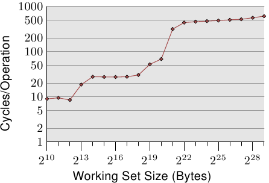
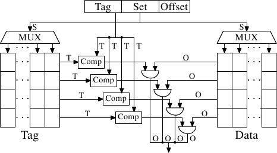
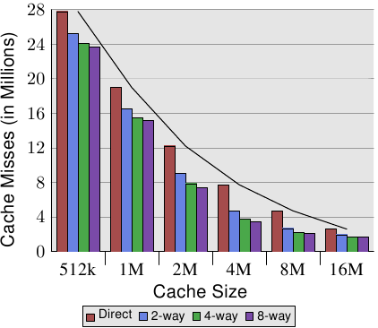
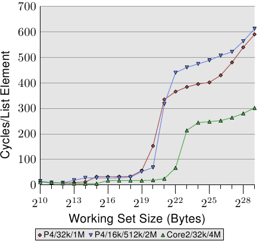
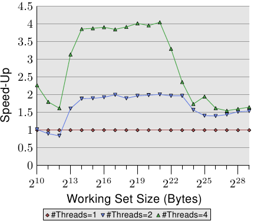
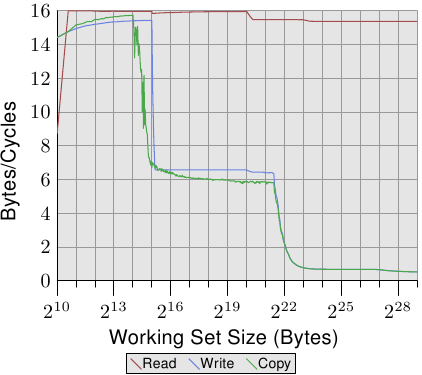

Advertisement
Front, Kernel, Security, Distributions, Development. See your byline here on LWN.net.
Weekly Edition
Return to the Front page
| ||||||||||||||||||||||||||||||||||||||||||||||||||||||||||||||||||||||||||||||||||||||||||||||||||||||||||||||||||||||||||||||||||||||||||||||||||||||||||||||||||||||||||||||||||||||||||||||||||||||||||||||||||||||||||||||||||||||||||||||||||||||||||||||
|
| ||||||||||||||||||||||||||||||||||||||||||||||||||||||||||||||||||||||||||||||||||||||||||||||||||||||||||||||||||||||||||||||||||||||||||||||||||||||||||||||||||||||||||||||||||||||||||||||||||||||||||||||||||||||||||||||||||||||||||||||||||||||||||||||
Memory part 2: CPU caches
[Editor's note: This is the second installment in Ulrich Drepper's "What
every programmer should know about memory" document. Those who have not
read the first part will
likely want to start there. This is good stuff, and we once again thank
Ulrich for allowing us to publish it.
One quick request: in a document of this length there are bound to be a few typographical errors remaining. If you find one, and wish to see it corrected, please let us know via mail to lwn@lwn.net rather than by posting a comment. That way we will be sure to incorporate the fix and get it back into Ulrich's copy of the document and other readers will not have to plow through uninteresting comments.] CPUs are today much more sophisticated than they were only 25 years ago. In those days, the frequency of the CPU core was at a level equivalent to that of the memory bus. Memory access was only a bit slower than register access. But this changed dramatically in the early 90s, when CPU designers increased the frequency of the CPU core but the frequency of the memory bus and the performance of RAM chips did not increase proportionally. This is not due to the fact that faster RAM could not be built, as explained in the previous section. It is possible but it is not economical. RAM as fast as current CPU cores is orders of magnitude more expensive than any dynamic RAM. If the choice is between a machine with very little, very fast RAM and a machine with a lot of relatively fast RAM, the second will always win given a working set size which exceeds the small RAM size and the cost of accessing secondary storage media such as hard drives. The problem here is the speed of secondary storage, usually hard disks, which must be used to hold the swapped out part of the working set. Accessing those disks is orders of magnitude slower than even DRAM access. Fortunately it does not have to be an all-or-nothing decision. A computer can have a small amount of high-speed SRAM in addition to the large amount of DRAM. One possible implementation would be to dedicate a certain area of the address space of the processor as containing the SRAM and the rest the DRAM. The task of the operating system would then be to optimally distribute data to make use of the SRAM. Basically, the SRAM serves in this situation as an extension of the register set of the processor. While this is a possible implementation, it is not viable. Ignoring the problem of mapping the physical resources of such SRAM-backed memory to the virtual address spaces of the processes (which by itself is terribly hard) this approach would require each process to administer in software the allocation of this memory region. The size of the memory region can vary from processor to processor (i.e., processors have different amounts of the expensive SRAM-backed memory). Each module which makes up part of a program will claim its share of the fast memory, which introduces additional costs through synchronization requirements. In short, the gains of having fast memory would be eaten up completely by the overhead of administering the resources.
So, instead of putting the SRAM under the control of the OS or user, it becomes a resource which is transparently used and administered by the processors. In this mode, SRAM is used to make temporary copies of (to cache, in other words) data in main memory which is likely to be used soon by the processor. This is possible because program code and data has temporal and spatial locality. This means that, over short periods of time, there is a good chance that the same code or data gets reused. For code this means that there are most likely loops in the code so that the same code gets executed over and over again (the perfect case for spatial locality). Data accesses are also ideally limited to small regions. Even if the memory used over short time periods is not close together there is a high chance that the same data will be reused before long (temporal locality). For code this means, for instance, that in a loop a function call is made and that function is located elsewhere in the address space. The function may be distant in memory, but calls to that function will be close in time. For data it means that the total amount of memory used at one time (the working set size) is ideally limited but the memory used, as a result of the random access nature of RAM, is not close together. Realizing that locality exists is key to the concept of CPU caches as we use them today.
A simple computation can show how effective caches can theoretically be. Assume access to main memory takes 200 cycles and access to the cache memory take 15 cycles. Then code using 100 data elements 100 times each will spend 2,000,000 cycles on memory operations if there is no cache and only 168,500 cycles if all data can be cached. That is an improvement of 91.5%. The size of the SRAM used for caches is many times smaller than the main memory. In the author's experience with workstations with CPU caches the cache size has always been around 1/1000th of the size of the main memory (today: 4MB cache and 4GB main memory). This alone does not constitute a problem. If the size of the working set (the set of data currently worked on) is smaller than the cache size it does not matter. But computers do not have large main memories for no reason. The working set is bound to be larger than the cache. This is especially true for systems running multiple processes where the size of the working set is the sum of the sizes of all the individual processes and the kernel. What is needed to deal with the limited size of the cache is a set of good strategies to determine what should be cached at any given time. Since not all data of the working set is used at exactly the same time we can use techniques to temporarily replace some data in the cache with other data. And maybe this can be done before the data is actually needed. This prefetching would remove some of the costs of accessing main memory since it happens asynchronously with respect to the execution of the program. All these techniques and more can be used to make the cache appear bigger than it actually is. We will discuss them in Section 3.3. Once all these techniques are exploited it is up to the programmer to help the processor. How this can be done will be discussed in Section 6.
3.1 CPU Caches in the Big PictureBefore diving into technical details of the implementation of CPU caches some readers might find it useful to first see in some more details how caches fit into the “big picture” of a modern computer system.
Figure 3.1 shows the minimum cache configuration. It corresponds to the architecture which could be found in early systems which deployed CPU caches. The CPU core is no longer directly connected to the main memory. {In even earlier systems the cache was attached to the system bus just like the CPU and the main memory. This was more a hack than a real solution.} All loads and stores have to go through the cache. The connection between the CPU core and the cache is a special, fast connection. In a simplified representation, the main memory and the cache are connected to the system bus which can also be used for communication with other components of the system. We introduced the system bus as “FSB” which is the name in use today; see Section 2.2. In this section we ignore the Northbridge; it is assumed to be present to facilitate the communication of the CPU(s) with the main memory. Even though computers for the last several decades have used the von Neumann architecture, experience has shown that it is of advantage to separate the caches used for code and for data. Intel has used separate code and data caches since 1993 and never looked back. The memory regions needed for code and data are pretty much independent of each other, which is why independent caches work better. In recent years another advantage emerged: the instruction decoding step for the most common processors is slow; caching decoded instructions can speed up the execution, especially when the pipeline is empty due to incorrectly predicted or impossible-to-predict branches. Soon after the introduction of the cache, the system got more complicated. The speed difference between the cache and the main memory increased again, to a point that another level of cache was added, bigger and slower than the first-level cache. Only increasing the size of the first-level cache was not an option for economical reasons. Today, there are even machines with three levels of cache in regular use. A system with such a processor looks like Figure 3.2. With the increase on the number of cores in a single CPU the number of cache levels might increase in the future even more.
Figure 3.2 shows three levels of cache and introduces the nomenclature we will use in the remainder of the document. L1d is the level 1 data cache, L1i the level 1 instruction cache, etc. Note that this is a schematic; the data flow in reality need not pass through any of the higher-level caches on the way from the core to the main memory. CPU designers have a lot of freedom designing the interfaces of the caches. For programmers these design choices are invisible.
In addition we have processors which have multiple cores and each core can have multiple “threads”. The difference between a core and a thread is that separate cores have separate copies of (almost {Early multi-core processors even had separate 2nd level caches and no 3rd level cache.}) all the hardware resources. The cores can run completely independently unless they are using the same resources—e.g., the connections to the outside—at the same time. Threads, on the other hand, share almost all of the processor's resources. Intel's implementation of threads has only separate registers for the threads and even that is limited, some registers are shared. The complete picture for a modern CPU therefore looks like Figure 3.3.
In this figure we have two processors, each with two cores, each of which has two threads. The threads share the Level 1 caches. The cores (shaded in the darker gray) have individual Level 1 caches. All cores of the CPU share the higher-level caches. The two processors (the two big boxes shaded in the lighter gray) of course do not share any caches. All this will be important, especially when we are discussing the cache effects on multi-process and multi-thread applications.
3.2 Cache Operation at High LevelTo understand the costs and savings of using a cache we have to combine the knowledge about the machine architecture and RAM technology from Section 2 with the structure of caches described in the previous section. By default all data read or written by the CPU cores is stored in the cache. There are memory regions which cannot be cached but this is something only the OS implementers have to be concerned about; it is not visible to the application programmer. There are also instructions which allow the programmer to deliberately bypass certain caches. This will be discussed in Section 6. If the CPU needs a data word the caches are searched first. Obviously, the cache cannot contain the content of the entire main memory (otherwise we would need no cache), but since all memory addresses are cacheable, each cache entry is tagged using the address of the data word in the main memory. This way a request to read or write to an address can search the caches for a matching tag. The address in this context can be either the virtual or physical address, varying based on the cache implementation. Since the tag requires space in addition to the actual memory, it is inefficient to chose a word as the granularity of the cache. For a 32-bit word on an x86 machine the tag itself might need 32 bits or more. Furthermore, since spatial locality is one of the principles on which caches are based, it would be bad to not take this into account. Since neighboring memory is likely to be used together it should also be loaded into the cache together. Remember also what we learned in Section 2.2.1: RAM modules are much more effective if they can transport many data words in a row without a new CAS or even RAS signal. So the entries stored in the caches are not single words but, instead, “lines” of several contiguous words. In early caches these lines were 32 bytes long; now the norm is 64 bytes. If the memory bus is 64 bits wide this means 8 transfers per cache line. DDR supports this transport mode efficiently. When memory content is needed by the processor the entire cache line is loaded into the L1d. The memory address for each cache line is computed by masking the address value according to the cache line size. For a 64 byte cache line this means the low 6 bits are zeroed. The discarded bits are used as the offset into the cache line. The remaining bits are in some cases used to locate the line in the cache and as the tag. In practice an address value is split into three parts. For a 32-bit address it might look as follows:
With a cache line size of 2O the low O bits are used as the offset into the cache line. The next S bits select the “cache set”. We will go into more detail soon on why sets, and not single slots, are used for cache lines. For now it is sufficient to understand there are 2S sets of cache lines. This leaves the top 32 - S - O = T bits which form the tag. These T bits are the value associated with each cache line to distinguish all the aliases {All cache lines with the same S part of the address are known by the same alias.} which are cached in the same cache set. The S bits used to address the cache set do not have to be stored since they are the same for all cache lines in the same set. When an instruction modifies memory the processor still has to load a cache line first because no instruction modifies an entire cache line at once (exception to the rule: write-combining as explained in Section 6.1). The content of the cache line before the write operation therefore has to be loaded. It is not possible for a cache to hold partial cache lines. A cache line which has been written to and which has not been written back to main memory is said to be “dirty”. Once it is written the dirty flag is cleared. To be able to load new data in a cache it is almost always first necessary to make room in the cache. An eviction from L1d pushes the cache line down into L2 (which uses the same cache line size). This of course means room has to be made in L2. This in turn might push the content into L3 and ultimately into main memory. Each eviction is progressively more expensive. What is described here is the model for an exclusive cache as is preferred by modern AMD and VIA processors. Intel implements inclusive caches {This generalization is not completely correct. A few caches are exclusive and some inclusive caches have exclusive cache properties.} where each cache line in L1d is also present in L2. Therefore evicting from L1d is much faster. With enough L2 cache the disadvantage of wasting memory for content held in two places is minimal and it pays off when evicting. A possible advantage of an exclusive cache is that loading a new cache line only has to touch the L1d and not the L2, which could be faster. The CPUs are allowed to manage the caches as they like as long as the memory model defined for the processor architecture is not changed. It is, for instance, perfectly fine for a processor to take advantage of little or no memory bus activity and proactively write dirty cache lines back to main memory. The wide variety of cache architectures among the processors for the x86 and x86-64, between manufacturers and even within the models of the same manufacturer, are testament to the power of the memory model abstraction.
In symmetric multi-processor (SMP) systems the caches of the CPUs cannot work independently from each other. All processors are supposed to see the same memory content at all times. The maintenance of this uniform view of memory is called “cache coherency”. If a processor were to look simply at its own caches and main memory it would not see the content of dirty cache lines in other processors. Providing direct access to the caches of one processor from another processor would be terribly expensive and a huge bottleneck. Instead, processors detect when another processor wants to read or write to a certain cache line. If a write access is detected and the processor has a clean copy of the cache line in its cache, this cache line is marked invalid. Future references will require the cache line to be reloaded. Note that a read access on another CPU does not necessitate an invalidation, multiple clean copies can very well be kept around. More sophisticated cache implementations allow another possibility to happen. If the cache line which another processor wants to read from or write to is currently marked dirty in the first processor's cache a different course of action is needed. In this case the main memory is out-of-date and the requesting processor must, instead, get the cache line content from the first processor. Through snooping, the first processor notices this situation and automatically sends the requesting processor the data. This action bypasses main memory, though in some implementations the memory controller is supposed to notice this direct transfer and store the updated cache line content in main memory. If the access is for writing the first processor then invalidates its copy of the local cache line. Over time a number of cache coherency protocols have been developed. The most important is MESI, which we will introduce in Section 3.3.4. The outcome of all this can be summarized in a few simple rules:
If these rules can be maintained, processors can use their caches efficiently even in multi-processor systems. All the processors need to do is to monitor each others' write accesses and compare the addresses with those in their local caches. In the next section we will go into a few more details about the implementation and especially the costs. Finally, we should at least give an impression of the costs associated with cache hits and misses. These are the numbers Intel lists for a Pentium M:
These are the actual access times measured in CPU cycles. It is interesting to note that for the on-die L2 cache a large part (probably even the majority) of the access time is caused by wire delays. This is a physical limitation which can only get worse with increasing cache sizes. Only process shrinking (for instance, going from 60nm for Merom to 45nm for Penryn in Intel's lineup) can improve those numbers. The numbers in the table look high but, fortunately, the entire cost does not have to be paid for each occurrence of the cache load and miss. Some parts of the cost can be hidden. Today's processors all use internal pipelines of different lengths where the instructions are decoded and prepared for execution. Part of the preparation is loading values from memory (or cache) if they are transferred to a register. If the memory load operation can be started early enough in the pipeline, it may happen in parallel with other operations and the entire cost of the load might be hidden. This is often possible for L1d; for some processors with long pipelines for L2 as well. There are many obstacles to starting the memory read early. It might be as simple as not having sufficient resources for the memory access or it might be that the final address of the load becomes available late as the result of another instruction. In these cases the load costs cannot be hidden (completely). For write operations the CPU does not necessarily have to wait until the value is safely stored in memory. As long as the execution of the following instructions appears to have the same effect as if the value were stored in memory there is nothing which prevents the CPU from taking shortcuts. It can start executing the next instruction early. With the help of shadow registers which can hold values no longer available in a regular register it is even possible to change the value which is to be stored in the incomplete write operation.
 For an illustration of the effects of cache behavior see Figure 3.4. We will talk about the program which generated the data later; it is a simple simulation of a program which accesses a configurable amount of memory repeatedly in a random fashion. Each data item has a fixed size. The number of elements depends on the selected working set size. The Y–axis shows the average number of CPU cycles it takes to process one element; note that the scale for the Y–axis is logarithmic. The same applies in all the diagrams of this kind to the X–axis. The size of the working set is always shown in powers of two. The graph shows three distinct plateaus. This is not surprising: the specific processor has L1d and L2 caches, but no L3. With some experience we can deduce that the L1d is 213 bytes in size and that the L2 is 220 bytes in size. If the entire working set fits into the L1d the cycles per operation on each element is below 10. Once the L1d size is exceeded the processor has to load data from L2 and the average time springs up to around 28. Once the L2 is not sufficient anymore the times jump to 480 cycles and more. This is when many or most operations have to load data from main memory. And worse: since data is being modified dirty cache lines have to be written back, too. This graph should give sufficient motivation to look into coding improvements which help improve cache usage. We are not talking about a few measly percent here; we are talking about orders-of-magnitude improvements which are sometimes possible. In Section 6 we will discuss techniques which allow writing more efficient code. The next section goes into more details of CPU cache designs. The knowledge is good to have but not necessary for the rest of the paper. So this section could be skipped.
3.3 CPU Cache Implementation DetailsCache implementers have the problem that each cell in the huge main memory potentially has to be cached. If the working set of a program is large enough this means there are many main memory locations which fight for each place in the cache. Previously it was noted that a ratio of 1-to-1000 for cache versus main memory size is not uncommon.
3.3.1 Associativity It would be possible to implement a cache where each cache line can hold a copy of any memory location. This is called a fully associative cache. To access a cache line the processor core would have to compare the tags of each and every cache line with the tag for the requested address. The tag would be comprised of the entire part of the address which is not the offset into the cache line (that means, S in the figure on Section 3.2 is zero). There are caches which are implemented like this but, by looking at the numbers for an L2 in use today, will show that this is impractical. Given a 4MB cache with 64B cache lines the cache would have 65,536 entries. To achieve adequate performance the cache logic would have to be able to pick from all these entries the one matching a given tag in just a few cycles. The effort to implement this would be enormous.
For each cache line a comparator is needed to compare the large tag (note, S is zero). The letter next to each connection indicates the width in bits. If none is given it is a single bit line. Each comparator has to compare two T-bit-wide values. Then, based on the result, the appropriate cache line content is selected and made available. This requires merging as many sets of O data lines as there are cache buckets. The number of transistors needed to implement a single comparator is large especially since it must work very fast. No iterative comparator is usable. The only way to save on the number of comparators is to reduce the number of them by iteratively comparing the tags. This is not suitable for the same reason that iterative comparators are not: it takes too long. Fully associative caches are practical for small caches (for instance, the TLB caches on some Intel processors are fully associative) but those caches are small, really small. We are talking about a few dozen entries at most. For L1i, L1d, and higher level caches a different approach is needed. What can be done is to restrict the search. In the most extreme restriction each tag maps to exactly one cache entry. The computation is simple: given the 4MB/64B cache with 65,536 entries we can directly address each entry by using bits 6 to 21 of the address (16 bits). The low 6 bits are the index into the cache line.
Such a direct-mapped cache is fast and relatively easy to implement as can be seen in Figure 3.6. It requires exactly one comparator, one multiplexer (two in this diagram where tag and data are separated, but this is not a hard requirement on the design), and some logic to select only valid cache line content. The comparator is complex due to the speed requirements but there is only one of them now; as a result more effort can be spent on making it fast. The real complexity in this approach lies in the multiplexers. The number of transistors in a simple multiplexer grows with O(log N), where N is the number of cache lines. This is tolerable but might get slow, in which case speed can be increased by spending more real estate on transistors in the multiplexers to parallelize some of the work and to increase the speed. The total number of transistors can grow slowly with a growing cache size which makes this solution very attractive. But it has a drawback: it only works well if the addresses used by the program are evenly distributed with respect to the bits used for the direct mapping. If they are not, and this is usually the case, some cache entries are heavily used and therefore repeatedly evicted while others are hardly used at all or remain empty.
 This problem can be solved by making the cache set associative. A set-associative cache combines the features of the full associative and direct-mapped caches to largely avoid the weaknesses of those designs. Figure 3.7 shows the design of a set-associative cache. The tag and data storage are divided into sets which are selected by the address. This is similar to the direct-mapped cache. But instead of only having one element for each set value in the cache a small number of values is cached for the same set value. The tags for all the set members are compared in parallel, which is similar to the functioning of the fully associative cache. The result is a cache which is not easily defeated by unfortunate or deliberate selection of addresses with the same set numbers and at the same time the size of the cache is not limited by the number of comparators which can be implemented in parallel. If the cache grows it is (in this figure) only the number of columns which increases, not the number of rows. The number of rows only increases if the associativity of the cache is increased. Today processors are using associativity levels of up to 16 for L2 caches or higher. L1 caches usually get by with 8.
Table 3.1: Effects of Cache Size, Associativity, and Line Size Given our 4MB/64B cache and 8-way set associativity the cache we are left with has 8,192 sets and only 13 bits of the tag are used in addressing the cache set. To determine which (if any) of the entries in the cache set contains the addressed cache line 8 tags have to be compared. That is feasible to do in very short time. With an experiment we can see that this makes sense. Table 3.1 shows the number of L2 cache misses for a program (gcc in this case, the most important benchmark of them all, according to the Linux kernel people) for changing cache size, cache line size, and associativity set size. In Section 7.2 we will introduce the tool to simulate the caches as required for this test. Just in case this is not yet obvious, the relationship of all these values is that the cache size is
cache line size × associativity × number of sets The addresses are mapped into the cache by using
O = log2 cache line size in the way the figure in Section 3.2 shows.

Figure 3.8 makes the data of the table more comprehensible. It shows the data for a fixed cache line size of 32 bytes. Looking at the numbers for a given cache size we can see that associativity can indeed help to reduce the number of cache misses significantly. For an 8MB cache going from direct mapping to 2-way set associative cache saves almost 44% of the cache misses. The processor can keep more of the working set in the cache with a set associative cache compared with a direct mapped cache. In the literature one can occasionally read that introducing associativity has the same effect as doubling cache size. This is true in some extreme cases as can be seen in the jump from the 4MB to the 8MB cache. But it certainly is not true for further doubling of the associativity. As we can see in the data, the successive gains are much smaller. We should not completely discount the effects, though. In the example program the peak memory use is 5.6M. So with a 8MB cache there are unlikely to be many (more than two) uses for the same cache set. With a larger working set the savings can be higher as we can see from the larger benefits of associativity for the smaller cache sizes. In general, increasing the associativity of a cache above 8 seems to have little effects for a single-thread workload. With the introduction of multi-core processors which use a shared L2 the situation changes. Now you basically have two programs hitting on the same cache which causes the associativity in practice to be halved (or quartered for quad-core processors). So it can be expected that, with increasing numbers of cores, the associativity of the shared caches should grow. Once this is not possible anymore (16-way set associativity is already hard) processor designers have to start using shared L3 caches and beyond, while L2 caches are potentially shared by a subset of the cores. Another effect we can study in Figure 3.8 is how the increase in cache size helps with performance. This data cannot be interpreted without knowing about the working set size. Obviously, a cache as large as the main memory would lead to better results than a smaller cache, so there is in general no limit to the largest cache size with measurable benefits. As already mentioned above, the size of the working set at its peak is 5.6M. This does not give us any absolute number of the maximum beneficial cache size but it allows us to estimate the number. The problem is that not all the memory used is contiguous and, therefore, we have, even with a 16M cache and a 5.6M working set, conflicts (see the benefit of the 2-way set associative 16MB cache over the direct mapped version). But it is a safe bet that with the same workload the benefits of a 32MB cache would be negligible. But who says the working set has to stay the same? Workloads are growing over time and so should the cache size. When buying machines, and one has to choose the cache size one is willing to pay for, it is worthwhile to measure the working set size. Why this is important can be seen in the figures on Figure 3.10.
Two types of tests are run. In the first test the elements are processed sequentially. The test program follows the pointer n but the array elements are chained so that they are traversed in the order in which they are found in memory. This can be seen in the lower part of Figure 3.9. There is one back reference from the last element. In the second test (upper part of the figure) the array elements are traversed in a random order. In both cases the array elements form a circular single-linked list.
3.3.2 Measurements of Cache Effects All the figures are created by measuring a program which can simulate working sets of arbitrary size, read and write access, and sequential or random access. We have already seen some results in Figure 3.4. The program creates an array corresponding to the working set size of elements of this type:
struct l {
struct l *n;
long int pad[NPAD];
};
All entries are chained in a circular list using the n element, either in sequential or random order. Advancing from one entry to the next always uses the pointer, even if the elements are laid out sequentially. The pad element is the payload and it can grow arbitrarily large. In some tests the data is modified, in others the program only performs read operations. In the performance measurements we are talking about working set sizes. The working set is made up of an array of struct l elements. A working set of 2N bytes contains
2N/sizeof(struct l) elements. Obviously sizeof(struct l) depends on the value of NPAD. For 32-bit systems, NPAD=7 means the size of each array element is 32 bytes, for 64-bit systems the size is 64 bytes.
Single Threaded Sequential AccessThe simplest case is a simple walk over all the entries in the list. The list elements are laid out sequentially, densely packed. Whether the order of processing is forward or backward does not matter, the processor can deal with both directions equally well. What we measure here—and in all the following tests—is how long it takes to handle a single list element. The time unit is a processor cycle. Figure 3.10 shows the result. Unless otherwise specified, all measurements are made on a Pentium 4 machine in 64-bit mode which means the structure l with NPAD=0 is eight bytes in size.
The first two measurements are polluted by noise. The measured workload is simply too small to filter the effects of the rest of the system out. We can safely assume that the values are all at the 4 cycles level. With this in mind we can see three distinct levels:
These steps can be easily explained: the processor has a 16kB L1d and 1MB L2. We do not see sharp edges in the transition from one level to the other because the caches are used by other parts of the system as well and so the cache is not exclusively available for the program data. Specifically the L2 cache is a unified cache and also used for the instructions (NB: Intel uses inclusive caches). What is perhaps not quite expected are the actual times for the different working set sizes. The times for the L1d hits are expected: load times after an L1d hit are around 4 cycles on the P4. But what about the L2 accesses? Once the L1d is not sufficient to hold the data one might expect it would take 14 cycles or more per element since this is the access time for the L2. But the results show that only about 9 cycles are required. This discrepancy can be explained by the advanced logic in the processors. In anticipation of using consecutive memory regions, the processor prefetches the next cache line. This means that when the next line is actually used it is already halfway loaded. The delay required to wait for the next cache line to be loaded is therefore much less than the L2 access time. The effect of prefetching is even more visible once the working set size grows beyond the L2 size. Before we said that a main memory access takes 200+ cycles. Only with effective prefetching is it possible for the processor to keep the access times as low as 9 cycles. As we can see from the difference between 200 and 9, this works out nicely. We can observe the processor while prefetching, at least indirectly. In Figure 3.11 we see the times for the same working set sizes but this time we see the graphs for different sizes of the structure l. This means we have fewer but larger elements in the list. The different sizes have the effect that the distance between the n elements in the (still consecutive) list grows. In the four cases of the graph the distance is 0, 56, 120, and 248 bytes respectively. At the bottom we can see the line from the previous graph, but this time it appears more or less as a flat line. The times for the other cases are simply so much worse. We can see in this graph, too, the three different levels and we see the large errors in the tests with the small working set sizes (ignore them again). The lines more or less all match each other as long as only the L1d is involved. There is no prefetching necessary so all element sizes just hit the L1d for each access. For the L2 cache hits we see that the three new lines all pretty much match each other but that they are at a higher level (about 28). This is the level of the access time for the L2. This means prefetching from L2 into L1d is basically disabled. Even with NPAD=7 we need a new cache line for each iteration of the loop; for NPAD=0, instead, the loop has to iterate eight times before the next cache line is needed. The prefetch logic cannot load a new cache line every cycle. Therefore we see a stall to load from L2 in every iteration. It gets even more interesting once the working set size exceeds the L2 capacity. Now all four lines vary widely. The different element sizes play obviously a big role in the difference in performance. The processor should recognize the size of the strides and not fetch unnecessary cache lines for NPAD=15 and 31 since the element size is smaller than the prefetch window (see Section 6.3.1). Where the element size is hampering the prefetching efforts is a result of a limitation of hardware prefetching: it cannot cross page boundaries. We are reducing the effectiveness of the hardware scheduler by 50% for each size increase. If the hardware prefetcher were allowed to cross page boundaries and the next page is not resident or valid the OS would have to get involved in locating the page. That means the program would experience a page fault it did not initiate itself. This is completely unacceptable since the processor does not know whether a page is not present or does not exist. In the latter case the OS would have to abort the process. In any case, given that, for NPAD=7 and higher, we need one cache line per list element the hardware prefetcher cannot do much. There simply is no time to load the data from memory since all the processor does is read one word and then load the next element. Another big reason for the slowdown are the misses of the TLB cache. This is a cache where the results of the translation of a virtual address to a physical address are stored, as is explained in more detail in Section 4. The TLB cache is quite small since it has to be extremely fast. If more pages are accessed repeatedly than the TLB cache has entries for the translation from virtual to physical address has to be constantly repeated. This is a very costly operation. With larger element sizes the cost of a TLB lookup is amortized over fewer elements. That means the total number of TLB entries which have to be computed per list element is higher. To observe the TLB effects we can run a different test. For one measurement we lay out the elements sequentially as usual. We use NPAD=7 for elements which occupy one entire cache line. For the second measurement we place each list element on a separate page. The rest of each page is left untouched and we do not count it in the total for the working set size. {Yes, this is a bit inconsistent because in the other tests we count the unused part of the struct in the element size and we could define NPAD so that each element fills a page. In that case the working set sizes would be very different. This is not the point of this test, though, and since prefetching is ineffective anyway this makes little difference.} The consequence is that, for the first measurement, each list iteration requires a new cache line and, for every 64 elements, a new page. For the second measurement each iteration requires loading a new cache line which is on a new page.
The result can be seen in Figure 3.12. The measurements were performed on the same machine as Figure 3.11. Due to limitations of the available RAM the working set size had to be restricted to 224 bytes which requires 1GB to place the objects on separate pages. The lower, red curve corresponds exactly to the NPAD=7 curve in Figure 3.11. We see the distinct steps showing the sizes of the L1d and L2 caches. The second curve looks radically different. The important feature is the huge spike starting when the working set size reaches 213 bytes. This is when the TLB cache overflows. With an element size of 64 bytes we can compute that the TLB cache has 64 entries. There are no page faults affecting the cost since the program locks the memory to prevent it from being swapped out. As can be seen the number of cycles it takes to compute the physical address and store it in the TLB is very high. The graph in Figure 3.12 shows the extreme case, but it should now be clear that a significant factor in the slowdown for larger NPAD values is the reduced efficiency of the TLB cache. Since the physical address has to be computed before a cache line can be read for either L2 or main memory the address translation penalties are additive to the memory access times. This in part explains why the total cost per list element for NPAD=31 is higher than the theoretical access time for the RAM.
We can glimpse a few more details of the prefetch implementation by looking at the data of test runs where the list elements are modified. Figure 3.13 shows three lines. The element width is in all cases 16 bytes. The first line is the now familiar list walk which serves as a baseline. The second line, labeled “Inc”, simply increments the pad[0] member of the current element before going on to the next. The third line, labeled “Addnext0”, takes the pad[0] list element of the next element and adds it to the pad[0] member of the current list element. The naïve assumption would be that the “Addnext0” test runs slower because it has more work to do. Before advancing to the next list element a value from that element has to be loaded. This is why it is surprising to see that this test actually runs, for some working set sizes, faster than the “Inc” test. The explanation for this is that the load from the next list element is basically a forced prefetch. Whenever the program advances to the next list element we know for sure that element is already in the L1d cache. As a result we see that the “Addnext0” performs as well as the simple “Follow” test as long as the working set size fits into the L2 cache.
The “Addnext0” test runs out of L2 faster than the “Inc” test, though. It needs more data loaded from main memory. This is why the “Addnext0” test reaches the 28 cycles level for a working set size of 221 bytes. The 28 cycles level is twice as high as the 14 cycles level the “Follow” test reaches. This is easy to explain, too. Since the other two tests modify memory an L2 cache eviction to make room for new cache lines cannot simply discard the data. Instead it has to be written to memory. This means the available bandwidth on the FSB is cut in half, hence doubling the time it takes to transfer the data from main memory to L2.
 One last aspect of the sequential, efficient cache handling is the size of the cache. This should be obvious but it still should be pointed out. Figure 3.14 shows the timing for the Increment benchmark with 128-byte elements (NPAD=15 on 64-bit machines). This time we see the measurement from three different machines. The first two machines are P4s, the last one a Core2 processor. The first two differentiate themselves by having different cache sizes. The first processor has a 32k L1d and an 1M L2. The second one has 16k L1d, 512k L2, and 2M L3. The Core2 processor has 32k L1d and 4M L2. The interesting part of the graph is not necessarily how well the Core2 processor performs relative to the other two (although it is impressive). The main point of interest here is the region where the working set size is too large for the respective last level cache and the main memory gets heavily involved.
Table 3.2: L2 Hits and Misses for Sequential and Random Walks, NPAD=0 As expected, the larger the last level cache is the longer the curve stays at the low level corresponding to the L2 access costs. The important part to notice is the performance advantage this provides. The second processor (which is slightly older) can perform the work on the working set of 220 bytes twice as fast as the first processor. All thanks to the increased last level cache size. The Core2 processor with its 4M L2 performs even better. For a random workload this might not mean that much. But if the workload can be tailored to the size of the last level cache the program performance can be increased quite dramatically. This is why it sometimes is worthwhile to spend the extra money for a processor with a larger cache.
Single Threaded Random Access MeasurementsWe have seen that the processor is able to hide most of the main memory and even L2 access latency by prefetching cache lines into L2 and L1d. This can work well only when the memory access is predictable, though.
If the access is unpredictable or random the situation is quite different. Figure 3.15 compares the per-list-element times for the sequential access (same as in Figure 3.10) with the times when the list elements are randomly distributed in the working set. The order is determined by the linked list which is randomized. There is no way for the processor to reliably prefetch data. This can only work by chance if elements which are used shortly after one another are also close to each other in memory. There are two important points to note in Figure 3.15. First, the large number is cycles needed for growing working set sizes. The machine makes it possible to access the main memory in 200-300 cycles but here we reach 450 cycles and more. We have seen this phenomenon before (compare Figure 3.11). The automatic prefetching is actually working to a disadvantage here. The second interesting point is that the curve is not flattening at various plateaus as it has been for the sequential access cases. The curve keeps on rising. To explain this we can measure the L2 access of the program for the various working set sizes. The result can be seen in Figure 3.16 and Table 3.2. The figure shows that, when the working set size is larger than the L2 size, the cache miss ratio (L2 misses / L2 access) starts to grow. The curve has a similar form to the one in Figure 3.15: it rises quickly, declines slightly, and starts to rise again. There is a strong correlation with the cycles per list element graph. The L2 miss rate will grow until it eventually reaches close to 100%. Given a large enough working set (and RAM) the probability that any of the randomly picked cache lines is in L2 or is in the process of being loaded can be reduced arbitrarily. The increasing cache miss rate alone explains some of the costs. But there is another factor. Looking at Table 3.2 we can see in the L2/#Iter columns that the total number of L2 uses per iteration of the program is growing. Each working set is twice as large as the one before. So, without caching we would expect double the main memory accesses. With caches and (almost) perfect predictability we see the modest increase in the L2 use shown in the data for sequential access. The increase is due to the increase of the working set size and nothing else.
For random access the per-element time increases by more than 100% for each doubling of the working set size. This means the average access time per list element increases since the working set size only doubles. The reason behind this is a rising rate of TLB misses. In Figure 3.17 we see the cost for random accesses for NPAD=7. Only this time the randomization is modified. While in the normal case the entire list of randomized as one block (indicated by the label ∞) the other 11 curves show randomizations which are performed in smaller blocks. For the curve labeled '60' each set of 60 pages (245.760 bytes) is randomized individually. That means all list elements in the block are traversed before going over to an element in the next block. This has the effect that number of TLB entries which are used at any one time is limited. The element size for NPAD=7 is 64 bytes, which corresponds to the cache line size. Due to the randomized order of the list elements it is unlikely that the hardware prefetcher has any effect, most certainly not for more than a handful of elements. This means the L2 cache miss rate does not differ significantly from the randomization of the entire list in one block. The performance of the test with increasing block size approaches asymptotically the curve for the one-block randomization. This means the performance of this latter test case is significantly influenced by the TLB misses. If the TLB misses can be lowered the performance increases significantly (in one test we will see later up to 38%).
3.3.3 Write Behavior Before we start looking at the cache behavior when multiple execution contexts (threads or processes) use the same memory we have to explore a detail of cache implementations. Caches are supposed to be coherent and this coherency is supposed to be completely transparent for the userlevel code. Kernel code is a different story; it occasionally requires cache flushes. This specifically means that, if a cache line is modified, the result for the system after this point in time is the same as if there were no cache at all and the main memory location itself had been modified. This can be implemented in two ways or policies:
The write-through cache is the simplest way to implement cache coherency. If the cache line is written to, the processor immediately also writes the cache line into main memory. This ensures that, at all times, the main memory and cache are in sync. The cache content could simply be discarded whenever a cache line is replaced. This cache policy is simple but not very fast. A program which, for instance, modifies a local variable over and over again would create a lot of traffic on the FSB even though the data is likely not used anywhere else and might be short-lived. The write-back policy is more sophisticated. Here the processor does not immediately write the modified cache line back to main memory. Instead, the cache line is only marked as dirty. When the cache line is dropped from the cache at some point in the future the dirty bit will instruct the processor to write the data back at that time instead of just discarding the content. Write-back caches have the chance to be significantly better performing, which is why most memory in a system with a decent processor is cached this way. The processor can even take advantage of free capacity on the FSB to store the content of a cache line before the line has to be evacuated. This allows the dirty bit to be cleared and the processor can just drop the cache line when the room in the cache is needed. But there is a significant problem with the write-back implementation. When more than one processor (or core or hyper-thread) is available and accessing the same memory it must still be assured that both processors see the same memory content at all times. If a cache line is dirty on one processor (i.e., it has not been written back yet) and a second processor tries to read the same memory location, the read operation cannot just go out to the main memory. Instead the content of the first processor's cache line is needed. In the next section we will see how this is currently implemented. Before we get to this there are two more cache policies to mention:
Both these policies are used for special regions of the address space which are not backed by real RAM. The kernel sets up these policies for the address ranges (on x86 processors using the Memory Type Range Registers, MTRRs) and the rest happens automatically. The MTRRs are also usable to select between write-through and write-back policies. Write-combining is a limited caching optimization more often used for RAM on devices such as graphics cards. Since the transfer costs to the devices are much higher than the local RAM access it is even more important to avoid doing too many transfers. Transferring an entire cache line just because a word in the line has been written is wasteful if the next operation modifies the next word. One can easily imagine that this is a common occurrence, the memory for horizontal neighboring pixels on a screen are in most cases neighbors, too. As the name suggests, write-combining combines multiple write accesses before the cache line is written out. In ideal cases the entire cache line is modified word by word and, only after the last word is written, the cache line is written to the device. This can speed up access to RAM on devices significantly. Finally there is uncacheable memory. This usually means the memory location is not backed by RAM at all. It might be a special address which is hardcoded to have some functionality outside the CPU. For commodity hardware this most often is the case for memory mapped address ranges which translate to accesses to cards and devices attached to a bus (PCIe etc). On embedded boards one sometimes finds such a memory address which can be used to turn an LED on and off. Caching such an address would obviously be a bad idea. LEDs in this context are used for debugging or status reports and one wants to see this as soon as possible. The memory on PCIe cards can change without the CPU's interaction, so this memory should not be cached.
3.3.4 Multi-Processor Support In the previous section we have already pointed out the problem we have when multiple processors come into play. Even multi-core processors have the problem for those cache levels which are not shared (at least the L1d). It is completely impractical to provide direct access from one processor to the cache of another processor. The connection is simply not fast enough, for a start. The practical alternative is to transfer the cache content over to the other processor in case it is needed. Note that this also applies to caches which are not shared on the same processor. The question now is when does this cache line transfer have to happen? This question is pretty easy to answer: when one processor needs a cache line which is dirty in another processor's cache for reading or writing. But how can a processor determine whether a cache line is dirty in another processor's cache? Assuming it is just because a cache line is loaded by another processor would be suboptimal (at best). Usually the majority of memory accesses are read accesses and the resulting cache lines are not dirty. Processor operations on cache lines are frequent (of course, why else would we have this paper?) which means broadcasting information about changed cache lines after each write access would be impractical. What developed over the years is the MESI cache coherency protocol (Modified, Exclusive, Shared, Invalid). The protocol is named after the four states a cache line can be in when using the MESI protocol:
This protocol developed over the years from simpler versions which were less complicated but also less efficient. With these four states it is possible to efficiently implement write-back caches while also supporting concurrent use of read-only data on different processors.
The state changes are accomplished without too much effort by the processors listening, or snooping, on the other processors' work. Certain operations a processor performs are announced on external pins and thus make the processor's cache handling visible to the outside. The address of the cache line in question is visible on the address bus. In the following description of the states and their transitions (shown in Figure 3.18) we will point out when the bus is involved. Initially all cache lines are empty and hence also Invalid. If data is loaded into the cache for writing the cache changes to Modified. If the data is loaded for reading the new state depends on whether another processor has the cache line loaded as well. If this is the case then the new state is Shared, otherwise Exclusive. If a Modified cache line is read from or written to on the local processor, the instruction can use the current cache content and the state does not change. If a second processor wants to read from the cache line the first processor has to send the content of its cache to the second processor and then it can change the state to Shared. The data sent to the second processor is also received and processed by the memory controller which stores the content in memory. If this did not happen the cache line could not be marked as Shared. If the second processor wants to write to the cache line the first processor sends the cache line content and marks the cache line locally as Invalid. This is the infamous “Request For Ownership” (RFO) operation. Performing this operation in the last level cache, just like the I→M transition is comparatively expensive. For write-through caches we also have to add the time it takes to write the new cache line content to the next higher-level cache or the main memory, further increasing the cost. If a cache line is in the Shared state and the local processor reads from it no state change is necessary and the read request can be fulfilled from the cache. If the cache line is locally written to the cache line can be used as well but the state changes to Modified. It also requires that all other possible copies of the cache line in other processors are marked as Invalid. Therefore the write operation has to be announced to the other processors via an RFO message. If the cache line is requested for reading by a second processor nothing has to happen. The main memory contains the current data and the local state is already Shared. In case a second processor wants to write to the cache line (RFO) the cache line is simply marked Invalid. No bus operation is needed. The Exclusive state is mostly identical to the Shared state with one crucial difference: a local write operation does not have to be announced on the bus. The local cache copy is known to be the only one. This can be a huge advantage so the processor will try to keep as many cache lines as possible in the Exclusive state instead of the Shared state. The latter is the fallback in case the information is not available at that moment. The Exclusive state can also be left out completely without causing functional problems. It is only the performance that will suffer since the E→M transition is much faster than the S→M transition. From this description of the state transitions it should be clear where the costs specific to multi-processor operations are. Yes, filling caches is still expensive but now we also have to look out for RFO messages. Whenever such a message has to be sent things are going to be slow. There are two situations when RFO messages are necessary:
In multi-thread or multi-process programs there is always some need for synchronization; this synchronization is implemented using memory. So there are some valid RFO messages. They still have to be kept as infrequent as possible. There are other sources of RFO messages, though. In Section 6 we will explain these scenarios. The Cache coherency protocol messages must be distributed among the processors of the system. A MESI transition cannot happen until it is clear that all the processors in the system have had a chance to reply to the message. That means that the longest possible time a reply can take determines the speed of the coherency protocol. {Which is why we see nowadays, for instance, AMD Opteron systems with three sockets. Each processor is exactly one hop away given that the processors only have three hyperlinks and one is needed for the Southbridge connection.} Collisions on the bus are possible, latency can be high in NUMA systems, and of course sheer traffic volume can slow things down. All good reasons to focus on avoiding unnecessary traffic. There is one more problem related to having more than one processor in play. The effects are highly machine specific but in principle the problem always exists: the FSB is a shared resource. In most machines all processors are connected via one single bus to the memory controller (see Figure 2.1). If a single processor can saturate the bus (as is usually the case) then two or four processors sharing the same bus will restrict the bandwidth available to each processor even more. Even if each processor has its own bus to the memory controller as in Figure 2.2 there is still the bus to the memory modules. Usually this is one bus but, even in the extended model in Figure 2.2, concurrent accesses to the same memory module will limit the bandwidth. The same is true with the AMD model where each processor can have local memory. Yes, all processors can concurrently access their local memory quickly. But multi-thread and multi-process programs--at least from time to time--have to access the same memory regions to synchronize. Concurrency is severely limited by the finite bandwidth available for the implementation of the necessary synchronization. Programs need to be carefully designed to minimize accesses from different processors and cores to the same memory locations. The following measurements will show this and the other cache effects related to multi-threaded code.
Multi Threaded MeasurementsTo ensure that the gravity of the problems introduced by concurrently using the same cache lines on different processors is understood, we will look here at some more performance graphs for the same program we used before. This time, though, more than one thread is running at the same time. What is measured is the fastest runtime of any of the threads. This means the time for a complete run when all threads are done is even higher. The machine used has four processors; the tests use up to four threads. All processors share one bus to the memory controller and there is only one bus to the memory modules.
Figure 3.19 shows the performance for sequential read-only access for 128 bytes entries (NPAD=15 on 64-bit machines). For the curve for one thread we can expect a curve similar to Figure 3.11. The measurements are for a different machine so the actual numbers vary. The important part in this figure is of course the behavior when running multiple threads. Note that no memory is modified and no attempts are made to keep the threads in sync when walking the linked list. Even though no RFO messages are necessary and all the cache lines can be shared, we see up to an 18% performance decrease for the fastest thread when two threads are used and up to 34% when four threads are used. Since no cache lines have to be transported between the processors this slowdown is solely caused by one or both of the two bottlenecks: the shared bus from the processor to the memory controller and bus from the memory controller to the memory modules. Once the working set size is larger than the L3 cache in this machine all three threads will be prefetching new list elements. Even with two threads the available bandwidth is not sufficient to scale linearly (i.e., have no penalty from running multiple threads). When we modify memory things get even uglier. Figure 3.20 shows the results for the sequential Increment test.
This graph is using a logarithmic scale for the Y axis. So, do not be fooled by the apparently small differences. We still have about a 18% penalty for running two threads and now an amazing 93% penalty for running four threads. This means the prefetch traffic together with the write-back traffic is pretty much saturating the bus when four threads are used. We use the logarithmic scale to show the results for the L1d range. What can be seen is that, as soon as more than one thread is running, the L1d is basically ineffective. The single-thread access times exceed 20 cycles only when the L1d is not sufficient to hold the working set. When multiple threads are running, those access times are hit immediately, even with the smallest working set sizes. One aspect of the problem is not shown here. It is hard to measure with this specific test program. Even though the test modifies memory and we therefore must expect RFO messages we do not see higher costs for the L2 range when more than one thread is used. The program would have to use a large amount of memory and all threads must access the same memory in parallel. This is hard to achieve without a lot of synchronization which would then dominate the execution time.
Finally in Figure 3.21 we have the numbers for the Addnextlast test with random access of memory. This figure is provided mainly to show to the appallingly high numbers. It now take around 1,500 cycles to process a single list element in the extreme case. The use of more threads is even more questionable. We can summarize the efficiency of multiple thread use in a table.
The table shows the efficiency for the multi-thread run with the largest working set size in the three figures on Figure 3.21. The number shows the best possible speed-up the test program incurs for the largest working set size by using two or four threads. For two threads the theoretical limits for the speed-up are 2 and, for four threads, 4. The numbers for two threads are not that bad. But for four threads the numbers for the last test show that it is almost not worth it to scale beyond two threads. The additional benefit is minuscule. We can see this more easily if we represent the data in Figure 3.21 a bit differently.
 The curves in Figure 3.22 show the speed-up factors, i.e., relative performance compared to the code executed by a single thread. We have to ignore the smallest sizes, the measurements are not accurate enough. For the range of the L2 and L3 cache we can see that we indeed achieve almost linear acceleration. We almost reach factors of 2 and 4 respectively. But as soon as the L3 cache is not sufficient to hold the working set the numbers crash. They crash to the point that the speed-up of two and four threads is identical (see the fourth column in Table 3.3). This is one of the reasons why one can hardly find motherboard with sockets for more than four CPUs all using the same memory controller. Machines with more processors have to be built differently (see Section 5). These numbers are not universal. In some cases even working sets which fit into the last level cache will not allow linear speed-ups. In fact, this is the norm since threads are usually not as decoupled as is the case in this test program. On the other hand it is possible to work with large working sets and still take advantage of more than two threads. Doing this requires thought, though. We will talk about some approaches in Section 6.
Special Case: Hyper-ThreadsHyper-Threads (sometimes called Symmetric Multi-Threading, SMT) are implemented by the CPU and are a special case since the individual threads cannot really run concurrently. They all share almost all the processing resources except for the register set. Individual cores and CPUs still work in parallel but the threads implemented on each core are limited by this restriction. In theory there can be many threads per core but, so far, Intel's CPUs at most have two threads per core. The CPU is responsible for time-multiplexing the threads. This alone would not make much sense, though. The real advantage is that the CPU can schedule another hyper-thread when the currently running hyper-thread is delayed. In most cases this is a delay caused by memory accesses. If two threads are running on one hyper-threaded core the program is only more efficient than the single-threaded code if the combined runtime of both threads is lower than the runtime of the single-threaded code. This is possible by overlapping the wait times for different memory accesses which usually would happen sequentially. A simple calculation shows the minimum requirement on the cache hit rate to achieve a certain speed-up. The execution time for a program can be approximated with a simple model with only one level of cache as follows (see [htimpact]):
Texe = N[(1-Fmem)Tproc + Fmem(GhitTcache + (1-Ghit)Tmiss)] The meaning of the variables is as follows:
For it to make any sense to use two threads the execution time of each of the two threads must be at most half of that of the single-threaded code. The only variable on either side is the number of cache hits. If we solve the equation for the minimum cache hit rate required to not slow down the thread execution by 50% or more we get the graph in Figure 3.23.
The X–axis represents the cache hit rate Ghit of the single-thread code. The Y–axis shows the required cache hit rate for the multi-threaded code. This value can never be higher than the single-threaded hit rate since, otherwise, the single-threaded code would use that improved code, too. For single-threaded hit rates below 55% the program can in all cases benefit from using threads. The CPU is more or less idle enough due to cache misses to enable running a second hyper-thread. The green area is the target. If the slowdown for the thread is less than 50% and the workload of each thread is halved the combined runtime might be less than the single-thread runtime. For the modeled system here (numbers for a P4 with hyper-threads were used) a program with a hit rate of 60% for the single-threaded code requires a hit rate of at least 10% for the dual-threaded program. That is usually doable. But if the single-threaded code has a hit rate of 95% then the multi-threaded code needs a hit rate of at least 80%. That is harder. Especially, and this is the problem with hyper-threads, because now the effective cache size (L1d here, in practice also L2 and so on) available to each hyper-thread is cut in half. Both hyper-threads use the same cache to load their data. If the working set of the two threads is non-overlapping the original 95% hit rate could also be cut in half and is therefore much lower than the required 80%. Hyper-Threads are therefore only useful in a limited range of situations. The cache hit rate of the single-threaded code must be low enough that given the equations above and reduced cache size the new hit rate still meets the goal. Then and only then can it make any sense at all to use hyper-threads. Whether the result is faster in practice depends on whether the processor is sufficiently able to overlap the wait times in one thread with execution times in the other threads. The overhead of parallelizing the code must be added to the new total runtime and this additional cost often cannot be neglected. In Section 6.3.4 we will see a technique where threads collaborate closely and the tight coupling through the common cache is actually an advantage. This technique can be applicable to many situations if only the programmers are willing to put in the time and energy to extend their code. What should be clear is that if the two hyper-threads execute completely different code (i.e., the two threads are treated like separate processors by the OS to execute separate processes) the cache size is indeed cut in half which means a significant increase in cache misses. Such OS scheduling practices are questionable unless the caches are sufficiently large. Unless the workload for the machine consists of processes which, through their design, can indeed benefit from hyper-threads it might be best to turn off hyper-threads in the computer's BIOS. {Another reason to keep hyper-threads enabled is debugging. SMT is astonishingly good at finding some sets of problems in parallel code.}
3.3.5 Other Details So far we talked about the address as consisting of three parts, tag, set index, and cache line offset. But what address is actually used? All relevant processors today provide virtual address spaces to processes, which means that there are two different kinds of addresses: virtual and physical. The problem with virtual addresses is that they are not unique. A virtual address can, over time, refer to different physical memory addresses. The same address in different process also likely refers to different physical addresses. So it is always better to use the physical memory address, right? The problem here is that instructions use virtual addresses and these have to be translated with the help of the Memory Management Unit (MMU) into physical addresses. This is a non-trivial operation. In the pipeline to execute an instruction the physical address might only be available at a later stage. This means that the cache logic has to be very quick in determining whether the memory location is cached. If virtual addresses could be used the cache lookup can happen much earlier in the pipeline and in case of a cache hit the memory content can be made available. The result is that more of the memory access costs could be hidden by the pipeline.
Processor designers are currently using virtual address tagging for the first level caches. These caches are rather small and can be cleared without too much pain. At least partial clearing the cache is necessary if the page table tree of a process changes. It might be possible to avoid a complete flush if the processor has an instruction which specifies the virtual address range which has changed. Given the low latency of L1i and L1d caches (~3 cycles) using virtual addresses is almost mandatory.
For larger caches including L2, L3, ... caches physical address tagging is needed. These caches have a higher latency and the virtual→physical address translation can finish in time. Because these caches are larger (i.e., a lot of information is lost when they are flushed) and refilling them takes a long time due to the main memory access latency, flushing them often would be costly. It should, in general, not be necessary to know about the details of the address handling in those caches. They cannot be changed and all the factors which would influence the performance are normally something which should be avoided or is associated with high cost. Overflowing the cache capacity is bad and all caches run into problems early if the majority of the used cache lines fall into the same set. The latter can be avoided with virtually addressed caches but is impossible for user-level processes to avoid for caches addressed using physical addresses. The only detail one might want to keep in mind is to not map the same physical memory location to two or more virtual addresses in the same process, if at all possible. Another detail of the caches which is rather uninteresting to programmers is the cache replacement strategy. Most caches evict the Least Recently Used (LRU) element first. This is always a good default strategy. With larger associativity (and associativity might indeed grow further in the coming years due to the addition of more cores) maintaining the LRU list becomes more and more expensive and we might see different strategies adopted. As for the cache replacement there is not much a programmer can do. If the cache is using physical address tags there is no way to find out how the virtual addresses correlate with the cache sets. It might be that cache lines in all logical pages are mapped to the same cache sets, leaving much of the cache unused. If anything, it is the job of the OS to arrange that this does not happen too often. With the advent of virtualization things get even more complicated. Now not even the OS has control over the assignment of physical memory. The Virtual Machine Monitor (VMM, aka hypervisor) is responsible for the physical memory assignment. The best a programmer can do is to a) use logical memory pages completely and b) use page sizes as large as meaningful to diversify the physical addresses as much as possible. Larger page sizes have other benefits, too, but this is another topic (see Section 4).
3.4 Instruction CacheNot just the data used by the processor is cached; the instructions executed by the processor are also cached. However, this cache is much less problematic than the data cache. There are several reasons:
There are a few rules programmers should follow but these mainly consist of rules on how to use the tools. We will discuss them in Section 6. Here we talk only about the technical details of the instruction cache. Ever since the core clock of CPUs increased dramatically and the difference in speed between cache (even first level cache) and core grew, CPUs have been pipelined. That means the execution of an instruction happens in stages. First an instruction is decoded, then the parameters are prepared, and finally it is executed. Such a pipeline can be quite long (> 20 stages for Intel's Netburst architecture). A long pipeline means that if the pipeline stalls (i.e., the instruction flow through it is interrupted) it takes a while to get up to speed again. Pipeline stalls happen, for instance, if the location of the next instruction cannot be correctly predicted or if it takes too long to load the next instruction (e.g., when it has to be read from memory). As a result CPU designers spend a lot of time and chip real estate on branch prediction so that pipeline stalls happen as infrequently as possible. On CISC processors the decoding stage can also take some time. The x86 and x86-64 processors are especially affected. In recent years these processors therefore do not cache the raw byte sequence of the instructions in L1i but instead they cache the decoded instructions. L1i in this case is called the “trace cache”. Trace caching allows the processor to skip over the first steps of the pipeline in case of a cache hit which is especially good if the pipeline stalled.
As said before, the caches from L2 on are unified caches which contain both code and data. Obviously here the code is cached in the byte sequence form and not decoded. To achieve the best performance there are only a few rules related to the instruction cache:
These rules are usually enforced by the code generation of a compiler. There are a few things the programmer can do and we will talk about them in Section 6.
3.4.1 Self Modifying Code In early computer days memory was a premium. People went to great lengths to reduce the size of the program to make more room for program data. One trick frequently deployed was to change the program itself over time. Such Self Modifying Code (SMC) is occasionally still found, these days mostly for performance reasons or in security exploits. SMC should in general be avoided. Though it is generally executed correctly there are boundary cases in which it is not and it creates performance problems if not done correctly. Obviously, code which is changed cannot be kept in the trace cache which contains the decoded instructions. But even if the trace cache is not used because the code has not been executed at all (or for some time) the processor might have problems. If an upcoming instruction is changed while it already entered the pipeline the processor has to throw away a lot of work and start all over again. There are even situations where most of the state of the processor has to be tossed away. Finally, since the processor assumes - for simplicity reasons and because it is true in 99.9999999% of all cases - that the code pages are immutable, the L1i implementation does not use the MESI protocol but instead a simplified SI protocol. This means if modifications are detected a lot of pessimistic assumptions have to be made. It is highly advised to avoid SMC whenever possible. Memory is not such a scarce resource anymore. It is better to write separate functions instead of modifying one function according to specific needs. Maybe one day SMC support can be made optional and we can detect exploit code trying to modify code this way. If SMC absolutely has to be used, the write operations should bypass the cache as to not create problems with data in L1d needed in L1i. See Section 6.1 for more information on these instructions. Normally on Linux it is easy to recognize programs which contain SMC. All program code is write-protected when built with the regular toolchain. The programmer has to perform significant magic at link time to create an executable where the code pages are writable. When this happens, modern Intel x86 and x86-64 processors have dedicated performance counters which count uses of self-modifying code. With the help of these counters it is quite easily possible to recognize programs with SMC even if the program will succeed due to relaxed permissions.
3.5 Cache Miss FactorsWe have already seen that when memory accesses miss the caches, the costs skyrocket. Sometimes this is not avoidable and it is important to understand the actual costs and what can be done to mitigate the problem.
3.5.1 Cache and Memory Bandwidth To get a better understanding of the capabilities of the processors we measure the bandwidth available in optimal circumstances. This measurement is especially interesting since different processor versions vary widely. This is why this section is filled with the data of several different machines. The program to measure performance uses the SSE instructions of the x86 and x86-64 processors to load or store 16 bytes at once. The working set is increased from 1kB to 512MB just as in our other tests and it is measured how many bytes per cycle can be loaded or stored.
Figure 3.24 shows the performance on a 64-bit Intel Netburst processor. For working set sizes which fit into L1d the processor is able to read the full 16 bytes per cycle, i.e., one load instruction is performed per cycle (the movaps instruction moves 16 bytes at once). The test does not do anything with the read data, we test only the read instructions themselves. As soon as the L1d is not sufficient anymore the performance goes down dramatically to less than 6 bytes per cycle. The step at 218 bytes is due to the exhaustion of the DTLB cache which means additional work for each new page. Since the reading is sequential prefetching can predict the accesses perfectly and the FSB can stream the memory content at about 5.3 bytes per cycle for all sizes of the working set. The prefetched data is not propagated into L1d, though. These are of course numbers which will never be achievable in a real program. Think of them as practical limits. What is more astonishing than the read performance is the write and copy performance. The write performance, even for small working set sizes, does not ever rise above 4 bytes per cycle. This indicates that, in these Netburst processors, Intel elected to use a Write-Through mode for L1d where the performance is obviously limited by the L2 speed. This also means that the performance of the copy test, which copies from one memory region into a second, non-overlapping memory region, is not significantly worse. The necessary read operations are so much faster and can partially overlap with the write operations. The most noteworthy detail of the write and copy measurements is the low performance once the L2 cache is not sufficient anymore. The performance drops to 0.5 bytes per cycle! That means write operations are by a factor of ten slower than the read operations. This means optimizing those operations is even more important for the performance of the program. In Figure 3.25 we see the results on the same processor but with two threads running, one pinned to each of the two hyper-threads of the processor.
The graph is shown at the same scale as the previous one to illustrate the differences and the curves are a bit jittery simply because of the problem of measuring two concurrent threads. The results are as expected. Since the hyper-threads share all the resources except the registers each thread has only half the cache and bandwidth available. That means even though each thread has to wait a lot and could award the other thread with execution time this does not make any difference since the other thread also has to wait for the memory. This truly shows the worst possible use of hyper-threads.
Compared to Figures 3.24 and 3.25 the results in Figures 3.26 and 3.27 look quite different for an Intel Core 2 processor. This is a dual-core processor with shared L2 which is four times as big as the L2 on the P4 machine. This only explains the delayed drop-off of the write and copy performance, though. There are much bigger differences. The read performance throughout the working set range hovers around the optimal 16 bytes per cycle. The drop-off in the read performance after 220 bytes is again due to the working set being too big for the DTLB. Achieving these high numbers means the processor is not only able to prefetch the data and transport the data in time. It also means the data is prefetched into L1d. The write and copy performance is dramatically different, too. The processor does not have a Write-Through policy; written data is stored in L1d and only evicted when necessary. This allows for write speeds close to the optimal 16 bytes per cycle. Once L1d is not sufficient anymore the performance drops significantly. As with the Netburst processor, the write performance is significantly lower. Due to the high read performance the difference is even higher here. In fact, when even the L2 is not sufficient anymore the speed difference increases to a factor of 20! This does not mean the Core 2 processors perform poorly. To the contrary, their performance is always better than the Netburst core's.
In Figure 3.27, the test runs two threads, one on each of the two cores of the Core 2 processor. Both threads access the same memory, not necessarily perfectly in sync, though. The results for the read performance are not different from the single-threaded case. A few more jitters are visible which is to be expected in any multi-threaded test case. The interesting point is the write and copy performance for working set sizes which would fit into L1d. As can be seen in the figure, the performance is the same as if the data had to be read from the main memory. Both threads compete for the same memory location and RFO messages for the cache lines have to be sent. The problematic point is that these requests are not handled at the speed of the L2 cache, even though both cores share the cache. Once the L1d cache is not sufficient anymore modified entries are flushed from each core's L1d into the shared L2. At that point the performance increases significantly since now the L1d misses are satisfied by the L2 cache and RFO messages are only needed when the data has not yet been flushed. This is why we see a 50% reduction in speed for these sizes of the working set. The asymptotic behavior is as expected: since both cores share the same FSB each core gets half the FSB bandwidth which means for large working sets each thread's performance is about half that of the single threaded case. Because there are significant differences between the processor versions of one vendor it is certainly worthwhile looking at the performance of other vendors' processors, too. Figure 3.28 shows the performance of an AMD family 10h Opteron processor. This processor has 64kB L1d, 512kB L2, and 2MB of L3. The L3 cache is shared between all cores of the processor. The results of the performance test can be seen in Figure 3.28.
The first detail one notices about the numbers is that the processor is capable of handling two instructions per cycle if the L1d cache is sufficient. The read performance exceeds 32 bytes per cycle and even the write performance is, with 18.7 bytes per cycle, high. The read curve flattens quickly, though, and is, with 2.3 bytes per cycle, pretty low. The processor for this test does not prefetch any data, at least not efficiently. The write curve on the other hand performs according to the sizes of the various caches. The peak performance is achieved for the full size of the L1d, going down to 6 bytes per cycle for L2, to 2.8 bytes per cycle for L3, and finally .5 bytes per cycle if not even L3 can hold all the data. The performance for the L1d cache exceeds that of the (older) Core 2 processor, the L2 access is equally fast (with the Core 2 having a larger cache), and the L3 and main memory access is slower. The copy performance cannot be better than either the read or write performance. This is why we see the curve initially dominated by the read performance and later by the write performance. The multi-thread performance of the Opteron processor is shown in Figure 3.29.
The read performance is largely unaffected. Each thread's L1d and L2 works as before and the L3 cache is in this case not prefetched very well either. The two threads do not unduly stress the L3 for their purpose. The big problem in this test is the write performance. All data the threads share has to go through the L3 cache. This sharing seems to be quite inefficient since even if the L3 cache size is sufficient to hold the entire working set the cost is significantly higher than an L3 access. Comparing this graph with Figure 3.27 we see that the two threads of the Core 2 processor operate at the speed of the shared L2 cache for the appropriate range of working set sizes. This level of performance is achieved for the Opteron processor only for a very small range of the working set sizes and even here it approaches only the speed of the L3 which is slower than the Core 2's L2.
3.5.2 Critical Word Load
Memory is transferred from the main memory into the caches in blocks which are smaller than the cache line size. Today 64 bits are transferred at once and the cache line size is 64 or 128 bytes. This means 8 or 16 transfers per cache line are needed. The DRAM chips can transfer those 64-bit blocks in burst mode. This can fill the cache line without any further commands from the memory controller and the possibly associated delays. If the processor prefetches cache lines this is probably the best way to operate. If a program's cache access of the data or instruction caches misses (that means, it is a compulsory cache miss, because the data is used for the first time, or a capacity cache miss, because the limited cache size requires eviction of the cache line) the situation is different. The word inside the cache line which is required for the program to continue might not be the first word in the cache line. Even in burst mode and with double data rate transfer the individual 64-bit blocks arrive at noticeably different times. Each block arrives 4 CPU cycles or more later than the previous one. If the word the program needs to continue is the eighth of the cache line, the program has to wait an additional 30 cycles or more after the first word arrives. Things do not necessarily have to be like this. The memory controller is free to request the words of the cache line in a different order. The processor can communicate which word the program is waiting on, the critical word, and the memory controller can request this word first. Once the word arrives the program can continue while the rest of the cache line arrives and the cache is not yet in a consistent state. This technique is called Critical Word First & Early Restart. Processors nowadays implement this technique but there are situations when that is not possible. If the processor prefetches data the critical word is not known. Should the processor request the cache line during the time the prefetch operation is in flight it will have to wait until the critical word arrives without being able to influence the order.
Even with these optimizations in place the position of the critical word on a cache line matters. Figure 3.30 shows the Follow test for sequential and random access. Shown is the slowdown of running the test with the pointer which is chased in the first word versus the case when the pointer is in the last word. The element size is 64 bytes, corresponding the cache line size. The numbers are quite noisy but it can be seen that, as soon as the L2 is not sufficient to hold the working set size, the performance of the case where the critical word is at the end is about 0.7% slower. The sequential access appears to be affected a bit more. This would be consistent with the aforementioned problem when prefetching the next cache line.
3.5.3 Cache Placement Where the caches are placed in relationship to the hyper-threads, cores, and processors is not under control of the programmer. But programmers can determine where the threads are executed and then it becomes important how the caches relate to the used CPUs. Here we will not go into details of when to select what cores to run the threads. We will only describe architecture details which the programmer has to take into account when setting the affinity of the threads. Hyper-threads, by definition share everything but the register set. This includes the L1 caches. There is not much more to say here. The fun starts with the individual cores of a processor. Each core has at least its own L1 caches. Aside from this there are today not many details in common:
A lot has been written in the propaganda material of the processor vendors about the advantage of their respective models. Separate L2 caches have an advantage if the working sets handled by the cores do not overlap. This works well for single-threaded programs. Since this is still often the reality today this approach does not perform too badly. But there is always some overlap. The caches all contain the most actively used parts of the common runtime libraries which means some cache space is wasted. Completely sharing all caches beside L1 as Intel's dual-core processors do can have a big advantage. If the working set of the threads working on the two cores overlaps significantly the total available cache memory is increased and working sets can be bigger without performance degradation. If the working sets do not overlap Intel's Advanced Smart Cache management is supposed to prevent any one core from monopolizing the entire cache. If both cores use about half the cache for their respective working sets there is some friction, though. The cache constantly has to weigh the two cores' cache use and the evictions performed as part of this rebalancing might be chosen poorly. To see the problems we look at the results of yet another test program.
The test program has one process constantly reading or writing, using SSE instructions, a 2MB block of memory. 2MB was chosen because this is half the size of the L2 cache of this Core 2 processor. The process is pinned to one core while a second process is pinned to the other core. This second process reads and writes a memory region of variable size. The graph shows the number of bytes per cycle which are read or written. Four different graphs are shown, one for each combination of the processes reading and writing. The read/write graph is for the background process, which always uses a 2MB working set to write, and the measured process with variable working set to read. The interesting part of the graph is the part between 220 and 223 bytes. If the L2 cache of the two cores were completely separate we could expect that the performance of all four tests would drop between 221 and 222 bytes, that means, once the L2 cache is exhausted. As we can see in Figure 3.31 this is not the case. For the cases where the background process is writing this is most visible. The performance starts to deteriorate before the working set size reaches 1MB. The two processes do not share memory and therefore the processes do not cause RFO messages to be generated. These are pure cache eviction problems. The smart cache handling has its problems with the effect that the experienced cache size per core is closer to 1MB than the 2MB per core which are available. One can only hope that, if caches shared between cores remain a feature of upcoming processors, the algorithm used for the smart cache handling will be fixed. Having a quad-core processor with two L2 caches was just a stop-gap solution before higher-level caches could be introduced. This design provides no significant performance advantage over separate sockets and dual-core processors. The two cores communicate via the same bus which is, at the outside, visible as the FSB. There is no special fast-track data exchange. The future of cache design for multi-core processors will lie in more layers. AMD's 10h family of processors make the start. Whether we will continue to see lower level caches be shared by a subset of the cores of a processor remains to be seen. The extra levels of cache are necessary since the high-speed and frequently used caches cannot be shared among many cores. The performance would be impacted. It would also require very large caches with high associativity. Both numbers, the cache size and the associativity, must scale with the number of cores sharing the cache. Using a large L3 cache and reasonably-sized L2 caches is a reasonable trade-off. The L3 cache is slower but it is ideally not as frequently used as the L2 cache. For programmers all these different designs mean complexity when making scheduling decisions. One has to know the workloads and the details of the machine architecture to achieve the best performance. Fortunately we have support to determine the machine architecture. The interfaces will be introduced in later sections.
3.5.4 FSB Influence The FSB plays a central role in the performance of the machine. Cache content can only be stored and loaded as quickly as the connection to the memory allows. We can show how much so by running a program on two machines which only differ in the speed of their memory modules. Figure 3.32 shows the results of the Addnext0 test (adding the content of the next elements pad[0] element to the own pad[0] element) for NPAD=7 on a 64-bit machine. Both machines have Intel Core 2 processors, the first uses 667MHz DDR2 modules, the second 800MHz modules (a 20% increase).
The numbers show that, when the FSB is really stressed for large working set sizes, we indeed see a large benefit. The maximum performance increase measured in this test is 18.2%, close to the theoretical maximum. What this shows is that a faster FSB indeed can pay off big time. It is not critical when the working set fits into the caches (and these processors have a 4MB L2). It must be kept in mind that we are measuring one program here. The working set of a system comprises the memory needed by all concurrently running processes. This way it is easily possible to exceed 4MB memory or more with much smaller programs. Today some of Intel's processors support FSB speeds up to 1,333MHz which would mean another 60% increase. The future is going to see even higher speeds. If speed is important and the working set sizes are larger, fast RAM and high FSB speeds are certainly worth the money. One has to be careful, though, since even though the processor might support higher FSB speeds the motherboard/Northbridge might not. It is critical to check the specifications. Continue to Part 3 (virtual memory). (Log in to post comments)
Memory part 2: CPU caches Posted Oct 1, 2007 15:06 UTC (Mon) by hummassa (subscriber, #307) [Link] It seems that you forgot to close an <i> tag somewhere (the whole articleis italicized here)
Memory part 2: CPU caches Posted Oct 1, 2007 15:23 UTC (Mon) by jake (editor, #205) [Link] > It seems that you forgot to close an <i> tag somewhere (the whole articleis italicized here)
What browser are you using? Firefox and Konq seem to show it correctly.
jake
Memory part 2: CPU caches Posted Oct 1, 2007 16:16 UTC (Mon) by jengelh (guest, #33263) [Link] Firebug (which I have activated by default) also gives me the green icon, where as a test page with an unclosed tag would give me the gray one.
Memory part 2: CPU caches Posted Oct 1, 2007 16:18 UTC (Mon) by jengelh (guest, #33263) [Link] Er, crap, gray meant disabled. Well, Firefox automatically closes tags in its internal tree structure as it seems.
Thanks Ulrich and Jon Posted Oct 1, 2007 19:23 UTC (Mon) by bwarren (guest, #38700) [Link] Another very well-written article. It's so nice to see charts with real data. Looking forward to the next chapters!
Thanks Ulrich and Jon Posted Oct 1, 2007 19:31 UTC (Mon) by nix (subscriber, #2304) [Link] I found the simplicity of the necessary testcases particularlyinteresting. Over and over again I was kicking myself: I've often wanted to know the sizes of the various levels of cache, for instance, and never once thought of running a trivial little benchmark.
(Of course *interpreting* the results of that benchmark requires all sorts
Such benchmarks were known for years! Posted Oct 1, 2007 21:02 UTC (Mon) by khim (subscriber, #9252) [Link] For example on Digit-Life:
Such benchmarks were known for years! Posted Oct 2, 2007 20:48 UTC (Tue) by nix (subscriber, #2304) [Link] Yeah, they were known for years (everything Ulrich talks about here wasknown for years; it's a human creation, after all, not a discovery.)
But *I* didn't know it. Thanks to this article, now I do. (The later
(And those links look really cool. Thanks.)
Small correction Posted Oct 1, 2007 19:30 UTC (Mon) by khim (subscriber, #9252) [Link] This is not due to the fact that faster RAM could not be built, as explained in the previous section. It is possible but it is not economical. RAM as fast as current CPU cores is orders of magnitude more expensive than any dynamic RAM. Actually it's not true anymore. While it's certainly true that it's possible to build RAM cells which are as fast as CPU cores it does not mean that it's possible to build RAM subsystem which is just as fast. And in fact it's totally impossible today. Not for $1'000'000, not for $1'000'000'000, not even for $1'000'000'000'000. Why? It's easy. Speed of light is 300'000km/sec (exactly 299'792'458m/s since October 21, 1983). It's not uncommon to have 3GHz CPUs today. This means that information can only travel 10cm in one tick - and it should travel back and forward, so only 5cm - less than 2in! If you'll take a look on DIMM you'll find that it's length is 133m. More than 10cm! So even if you plug DIMM module directly in CPU and cells on said model of RAM have infinite speed - you still can not get RAM which is as fast as current CPU core! Sure - we can make geometrically smaller module and put it closer to CPU, but if we'll want to have gigabytes of RAM - we'll be forced to store only parts of this information in this superfast RAM, the rest will go farther from core... oops - we just invented the cache again! So no, this is not just question of the economics anymore - IT industry stumbled upon first fundamental limitation few years back...
Small correction Posted Oct 1, 2007 21:26 UTC (Mon) by epa (subscriber, #39769) [Link] That may be true, as long as you are restricted to building your circuit in two dimensions... who is to say we won't discover a way to build integrated circuits in a sphere rather than on a flat wafer?
Small correction Posted Oct 1, 2007 23:20 UTC (Mon) by quotemstr (subscriber, #45331) [Link] Consider the heat dissipation issues of using a sphere.
Spherical chip design Posted Oct 2, 2007 2:14 UTC (Tue) by pr1268 (subscriber, #24648) [Link] Just a thought: implement an array of liquid-cooling jackets. It's worked for years in diesel- and gasoline-powered internal combustion engines. Hope it doesn't spring a leak! ;-)
Small correction-already in the works... Posted Oct 2, 2007 0:20 UTC (Tue) by vomlehn (subscriber, #45588) [Link] There was an article in SlashDot not too long ago (sorry, don't have the reference) about IBM being about to use metal vias (essentially, vertical wiring) for building what are basically 3D chips. This will allow memory to be much closer to the processor, for a given amount of memory. There will, of course, be heat dissipation problems galore.
Small correction Posted Oct 2, 2007 0:27 UTC (Tue) by Richard_J_Neill (subscriber, #23093) [Link] Not quite - we aren't limited by speed of light, but by power dissipation. One could certainly fit 100GB of RAM inside the 5cm boundary, by making a 3-dimensional structure. However, there would be no way to keep such a solid "brick" of transistors cool...
[Of course, I hope to be proved wrong in that!]
Small correction Posted Oct 2, 2007 4:54 UTC (Tue) by AJWM (guest, #15888) [Link] > However, there would be no way to keep such a solid "brick" of transistors cool...
That's where research into new substrates comes in. Synthetic diamond, for one example (diamond being an excellent heat conductor). (Hey, you didn't think the fancy crystalline computer modules in various SF TV shows were just glass, did you?)
Hot? Posted Oct 2, 2007 21:06 UTC (Tue) by ncm (subscriber, #165) [Link] Who says memory has to be made of transistors? In the past, memory has been made of ripples on mercury, ferrous donuts, rotating drums, holes in paper, glow in phosphors bombarded by electron beams... storage need not run hot. In particular, bits not changing state need not consume any power. Changing state may take arbitrarily little power; the faster they must change, the more power it usually takes, but write speed is less critical than read time. Interacting with it is always going to take power and produce heat, but that may be much, much less than with masses of transistors.
Hot? Posted Oct 4, 2007 13:14 UTC (Thu) by ekj (guest, #1524) [Link] Actually, that's not true. Bolzmanns constant sets an absolute, physical, lower limit on the amount of power that is needed for causing a permanent lasting state-change. (such a flipping a single bit)
Granted, that limit is *very* low. But it's not zero. I calculated some time back (if you're sufficiently interested, google it) that if we continue doubling computing-power we'll run up against this hard physical limit in aproximately 15-20 years.
That's a long time in computing. But it's not forever. It's short enough that most of us will get to experience it.
Oh yeah, I'm aware of reversible computing. I just don't think that'll go anywhere. I'd be happy to be proven wrong.
Small correction Posted Oct 2, 2007 8:35 UTC (Tue) by nowster (subscriber, #67) [Link] What you're describing is latency, not throughput. They're two different measurements of "speed".
Small correction Posted Oct 3, 2007 2:36 UTC (Wed) by k8to (subscriber, #15413) [Link] He knows.
The thing about memory is that latency kills your processing throughput. If the CPU needs the data and it isn't available then the thread stalls until it becomes available. There's various techniques which can sometimes hide this problem, which is what this section of course is largely about.
In the context of making memory which does require cache (the topic of the post), the speed that matters is necessarily latency.
Light speed Posted Oct 2, 2007 12:14 UTC (Tue) by smurf (subscriber, #17840) [Link] It gets worse.
Light speed is defined as photons moving in a vacuum. Anything else, which definitely includes electrons in a semiconductor, is slower.
It gets worse.
You need to actually switch a transistor or two on the way to+fro (otherwise there would be no point in the exercise ;-), which requires moving a charge, which requires yet more time.
Memory part 2: CPU caches -- factual error Posted Oct 2, 2007 4:00 UTC (Tue) by tshow (subscriber, #6411) [Link] I know the article is mainly addressing desktop-style computers, but it is not correct to say that OS-controlled fast RAM is not viable. It may not make sense in your PC, but nearly every game console I've worked on in the past decade has had dedicated fast RAM, usually closely tied to the CPU and sometimes the graphics system, that was mapped directly into the address space of the machine. In most cases it was on-die with the processor.
On the PlayStation, PS2 and PSP, they call it the "scratchpad". Nintendo DS has similar hardware, as did the Dreamcast as I recall. The GameCube system RAM was divided into 8M of 1T-SRAM and 24M DRAM, with the assumption that slow-access DMA data (like PCM sound files) would reside in slow memory, while executable pages and data that required frequent access would be stored in fast memory.
One common technique is to compile your game to use the scratchpad for the stack. The performance improvements can be dramatic with some loads. Cycling data that will need to be randomly accessed through the scratchpad for processing (DMA it in, work on it, DMA it out) is another common use, especially in games where physics, collision, AI or rendering are processor intensive.
You can argue that it only makes sense for certain workloads, but there are literally hundreds of millions of consoles out there built to this design; it is obviously viable.
One direction this design leads is the Cell processor design, wherein you have a series of co-processors with tightly-bound fast memory and slow/difficult access to system memory. Another is the AGP GART and its successors, or NUMA, for that matter. There are many variations of tightly-coupled vs. loosely-coupled memory out there in the wild, and many of them are address-space mapped rather than caches.
I suppose my major issue here is that the articles are turning out to be disappointingly PC-specific and CPU-centric. While CPU/memory interaction on PCs is certainly important, at least in game development it is only a piece of the puzzle. I'm hoping as we get past the introductory chapters the articles will begin to consider the lands beyond the north bridge and alternate system designs.
Memory part 2: CPU caches -- factual error Posted Oct 2, 2007 20:58 UTC (Tue) by nix (subscriber, #2304) [Link] Ulrich has been quite... emphatic in the past about not caring about them.They're too rare, you see. (Too rare in the sense of, um, hugely numerically dominating. I don't get it either.)
Memory part 2: CPU caches -- factual error Posted Oct 11, 2007 7:47 UTC (Thu) by arcticwolf (guest, #8341) [Link] Don't try to make sense of Drepper - doing so will only get you verbally abused. (Hmm, looking at the front page for this - well, last, for you - week, I wonder how many women there are in glibc development. Having lurked on the libc-alpha mailing list for a while, Drepper seems, to me, to be exhibiting a perfect example of the kind of attitude that we-the-community should try to get rid of as much as possible.)
Embedded is a special case Posted Oct 4, 2007 3:07 UTC (Thu) by filker0 (guest, #31278) [Link] Embedded systems are a special case and all of the rules change. Set top boxes, such as gamemachines, are special purpose platforms. General coding techniques used in your typical application tend to be architecture and platform agnostic, a game is written knowing exactly what kind of hardware environment it's going to get. Embedded apps often manage their own cache, too. I know the ones I'm working on right now do.
Embedded is a special case Posted Oct 4, 2007 6:00 UTC (Thu) by tshow (subscriber, #6411) [Link] > Embedded systems are a special case and all of the rules change.
That's fair enough, but there are an awful lot of game machines and embedded systems out there; more than there are PCs, if you count game systems, cellphones, PDAs, set-top boxes, the control systems in cars...
Our game engine deals with tightly-coupled address-mapped memory on all the platforms it supports; on platforms that don't actually have such memory (PCs, mostly), we fake it with a block of normal memory. We've built our engine as an OS (and support libraries) for games; the idea being that a game will compile on any platform that the engine supports with minimal resorting to #ifdef. You *can* write fast platform-agnostic game code that crosses (very different) platforms.
A whole lot of the techniques that I'm sure this series of articles is going to delve into (walking memory in address-order whenever possible, aligning data structures to (ideally) machine word size, (hopefully) cache line size or (at worst) hardware page size, keeping transitions across page boundaries to a minimum, unrolling loops is no longer a good idea, strategies for preventing icache misses...) are just as applicable to embedded systems as they are to PCs. Arguably moreso; caches on embedded systems and game systems tend to be significantly smaller than on PCs, so the cost of cache misses is that much higher.
With relatively little effort and a little discussion of the wider realms beyond the beige (or black, or possibly silvery; your mileage may vary) desktop space heater, this could be a significantly more useful treatise.
No disagreement here Posted Oct 5, 2007 1:10 UTC (Fri) by filker0 (guest, #31278) [Link] Embedded systems may outnumber general purpose PCs, but I doubt that any single platformoutnumbers them on its own. Also, far fewer programmers ever have a chance to program one. Whether all programmers have to know how to deal with systems with 4 different types of RAM, or demand paged high speed static RAM that is paged from a larger SDRAM, that in turn is paged from NOR or NAND Flash by a separate microprocessor that implements a predictive pre-fetch. Each platform is a special case.
A game engine such as the one you describe provides a virtual machine, and makes a heck of a
My current project (I'm the low-level platform guy) involves a lot of cache performance
Most programmers don't have to know the kind of cache details that game console and some
Memory part 2: CPU caches -- factual error Posted Oct 5, 2007 21:16 UTC (Fri) by giraffedata (subscriber, #1954) [Link] What the article is biased toward isn't desktop computers or PCs (and the latter is ambiguous; sometimes it means personal computer; other times it means architectures descendant of the IBM PC). The bias is toward general purpose computers. Everything seems to be fully applicable to a typical web server, for example.
Memory part 2: CPU caches Posted Oct 2, 2007 6:29 UTC (Tue) by phip (subscriber, #1715) [Link] Shouldn't the muxes in figure 3.7 be between the ram arrays and the comparitors (similar to figure 3.6, with one mux for each comparitor) instead of along the top of the ram arrays?
Thanks for another interesting article.
Should disclose: x86 specific Posted Oct 2, 2007 9:42 UTC (Tue) by ncm (subscriber, #165) [Link] It should have been noted in the text that much of the description of multi-cache interaction is specific to x86 and similarly "sequentially-consistent" architectures. Most modern architectures are not sequentially consistent, and threaded programs must be extremely careful about one thread depending on data written by another thread becoming visible in the order in which it was written. "Modern", in this context, includes Alpha, PPC, Itanium, and (sometimes) SPARC, but not x86, AMD, or MIPS. The consequence of the requirement to maintain sequential consistency is poor performance and/or horrifyingly complex cache interaction machinery on machines with more than (about) four CPUs, so we can expect to see more non-x86 multi-core chips in use soon.
As an example of an unfortunate interaction, consider a simple case with only two threads. One thread fills a buffer and then sets a flag indicating its contents are ready. A second thread periodically checks the flag, and when it finds the flag set it uses the contents of the buffer. Without sequential consistency, the second thread might see old contents of the buffer because they have not yet been spilled from the cache of the processor executing the first thread.
To protect against memory write-order visibility problems on non-x86 machines, your threads must arrange to execute "memory barrier" instructions at appropriate points. The simplest way to do this portably is to use mutex lock and unlock operations. The lock/unlock operations may be entirely superfluous to synchronize between threads (although you might also find uses for them) but their side effects of executing memory barrier instructions may be needed to ensure that the second thread actually sees all the bytes that were written by the first at the time that it looks. You must hope, too, that your compiler knows not to optimize by moving assignments across the barrier event.
Extant machines on which this sort of care is needed include Apple dual-G5 and any multi-CPU Itanium. The need to pay attention to this sort of detail in multi-threaded coding will increase when other architectures not bound by x86's sequential consistency model begin to trounce x86 performance as the the number of cores that fit on a chip grows. Failure to get these details right will often mean randomly occurring unreproducible bugs. Conventional testing may never detect the bugs; they might be identified only through inspection of the code.
Good diasnosys, wrong conclusion Posted Oct 2, 2007 13:01 UTC (Tue) by khim (subscriber, #9252) [Link] Conventional testing may never detect the bugs; they might be identified only through inspection of the code. And this basically means that this approach will not be used in practice. Most programs will just never work correctly in this type of environment so it'll be a niche segment in the future. I think the problem will be solved by small changes to x86 which will allow it to optionally forgone sequential consistency where it's really needed (0.01% of cases), not by switch to some other architecture. It's telling that one of your "extant machines" is not longer "extant": Apple threw away G5 with all these problems and switched to Xeons which actually work.
Good diasnosys, wrong conclusion Posted Oct 2, 2007 15:58 UTC (Tue) by foom (subscriber, #14868) [Link] ...Apple didn't throw away the G5 because it didn't work. It perfectly well.
They threw it away because of power consumption. They needed a new processor to put in a
Good diagnosis, wrong conclusion Posted Oct 2, 2007 18:58 UTC (Tue) by ncm (subscriber, #165) [Link] First, dual-G5 machines are still widely used. They work fine.
More to the point, when 32-core PPCs are several times faster than 32-core x86es, you will naturally become more interested in how to program them reliably. Those of us already obliged to make our code work on such machines, or who have taken the trouble to be prepared, will have had a lot of practice.
Yawn. Posted Oct 3, 2007 5:47 UTC (Wed) by khim (subscriber, #9252) [Link] We're hearing this tune for quarter-century: in the next few years x86 will be hopelessly outmatched and replace by fade-of-the-day (RISC, VLIW, EPIC, etc). This predictions stubbornly fail to materialize. The fact is: unless you can show drastic increase in speed (not percents, times) - no one will bother. Even if will show drastic increase in speed - you'll only manage to grab tiny niche if you can not run existing tasks as well as x86-solution (see Itanic vs Opteron). So any solution which have any hope of winning must include x86. It can include specialized instructions and cores (for multi-core CPUs) which can only be used by specialized software, but if it's not x86-compatible at all - it's no starter. Of course you can win some new, specialized market (ARM did this for mobile applications), but you can not push x86 from servers and desktops. And niches tend to evaporate over time. The only big one PPC occupies today is game consoles - and few programmers interact with them...
Wipe the gunk out of your eyes Posted Oct 3, 2007 23:02 UTC (Wed) by filker0 (guest, #31278) [Link] We're hearing this tune for quarter-century: in the next few years x86 will be hopelessly outmatched and replace by fade-of-the-day (RISC, VLIW, EPIC, etc). This predictions stubbornly fail to materialize. The fact is: unless you can show drastic increase in speed (not percents, times) - no one will bother. Even if will show drastic increase in speed - you'll only manage to grab tiny niche if you can not run existing tasks as well as x86-solution (see Itanic vs Opteron). So any solution which have any hope of winning must include x86. It can include specialized instructions and cores (for multi-core CPUs) which can only be used by specialized software, but if it's not x86-compatible at all - it's no starter. It already happened. Years ago. The Alpha RISC processor could run (at a given clock speed and generation of fabrication) anything else on most typical loads. The x86 architecture is, indeed, going to be around for a long time; this has been perpetuated in no small part by Microsoft and their line of operating systems that have depended so much on backward compatibility. Yes, NT was available for the Alpha, but I know of very few apps that were made available for it. DEC fumbled the marketing of the Alpha, Compaq sold it off to Intel, and Intel, having the choice of continuing its development at the expense of the (inferior in my opinion) Itanium decided to do no further development and End-of-Life it as quickly as contractually possible. Yes, we're stuck with the i86 lineage, and we will suffer performance ceilings because of it. Ultra-high performance systems will use something else, but the average application end user won't move so long as the dominant OS is bound to intel and insufficient commercial apps aren't available on the other platforms. The Mac could as easily move from the Intel chips to some other CPU in the future -- Apple has enough foresight to provide for fat apps (OS/2 did this, too). Linux is available on just about everything with a register, a stack, and more than 1MB of RAM. For the most part, Open Software can run on anything. But for most of you, yes, the already hopelessly outmatched x86 line is the chain around your ankle for the next decade.
Wipe the gunk out of your eyes Posted Oct 4, 2007 6:43 UTC (Thu) by mingo (subscriber, #31122) [Link] Yes, we're stuck with the i86 lineage, and we will suffer performance ceilings because of it. Yes - but this statement ignores the complete economic picture: it's not just the hardware that matters, but the total stack that is in a computing solution. Nobody buys just the raw hardware - the software is an inextractable part of the equation. So once you take the cost of writing and supporting software into account too, applied to general computing problems that computers are used for, you will realize that today the hardware is not the main limiting factor but humans are. Most software is running a few orders of magnitude slower than it could run on the hardware. The platform that is slightly slower but offers superior programmability - especially for something as hard to grok for humans as parallelism and/or cache coherency - will continue to be the most economic choice in all mainstream uses of computers. (and will continue to use the resources it earns from the mainstream to chip away on most of the remaining niches) The trick is to maintain the right balance between programmability of a platform and raw physical performance - and the x86 space has done that pretty well over the years. (combined with the fact that the x86 instruction set has become a de-facto bytecode - so RISC never had a chance even technologically.) (If only performance mattered then customers would buy hardware by sending complete chip designs and hard disk images to manufacturers, optimized to their business problem, which would then be assembled from scratch. There would be no uniform 'instruction set' per se. We are still decades (or more) away from being able to transform arbitrary, abstract business problems into actual hardware in such a pervasive way, without having any common platform layered between them. The moment you have even just a single persistent layer between the business problem and the hardware (be that layer controlled by the customer or by a manufacturer or by the market), platform thinking takes over and raw performance takes a backseat.)
Wipe the Windows out of your eyes Posted Oct 5, 2007 17:27 UTC (Fri) by hazelsct (guest, #3659) [Link] ...this statement ignores the complete economic picture: it's not just the hardware that matters, but the total stack that is in a computing solution. Nobody buys just the raw hardware - the software is an inextractable part of the equation.This is why free software is superior, *all* of our software already runs on *all* the hardware (e.g. 95%+ of Debian builds on all eleven arches), and very well at that! "Programmability" is bunk, all modern CPU architectures are programmable, we're just the only ones bothering to program all of them -- or rather, the only ones open enough to let people adapt our programs to all of them. So when Sun starts selling its 8-core 8-threads/core Sparcs next year, Solaris, Linux, and maybe one or two BSDs will be there, Windoze and MockOS will not. GNOME, KDE, Compiz Fusion, Croquet, Looking Glass, Second Life, Sugar, etc. will be there; Aero, Carbon, and any 3-D environment they dream up will not. We will have better servers, and better immersive 3-D performance, the games will follow, and it will be over for MS and Apple. Okay, maybe it won't happen quite that fast. But follow the trends: we were first on Itanium (but who cares?), first on AMD64 (and AMD credits us with driving that platform's success), our software is all over ARM where only a minuscule fraction of Microsoft's is (on "Pocket PC" or "Windows Mobile" or whatever they're calling it now). When the next CPU architecture breakthrough comes, we'll be there and they'll need to play catch-up, again -- hopefully the hardware won't wait for Microsoft this time. Speaking of which, this is also how DEC fumbled the marketing of Alpha -- they waited for MS to have NT ready before releasing it, and lost more than a year in that wait. They should have bypassed NT, released earlier with VMS and OSF/1 (or Digital Unix, etc.), dominated the workstation/server market, then used Linux on the low end to ramp up the volume and stay faster than Intel. MS is darned lucky that modern x86-compatible CPUs run 64-bit code somewhat fast with low power consumption. Otherwise Linux on Alpha/Itanic/PPC64 on the high and end ARM on the low end would have eaten their lunch. But then, we're doing that *now* on handhelds and smart phones, we're on Cell and they're not, and we'll beat them to the 64-way Sparcs! Resistance is futile. World domination is inevitable.
Not Windows specific Posted Oct 11, 2007 19:51 UTC (Thu) by renox (guest, #23785) [Link] Uhm, the next architecture clash I expect to happen is not what you're waiting for (a new architecture gaining some marketshare) but low power x86 cores gaining over ARM in the 'intelligent phone' space.
Plus even free software has portability issues: the OLPC doesn't use an x86 for nothing..
Wipe the gunk out of your eyes Posted Oct 5, 2007 0:02 UTC (Fri) by nlucas (subscriber, #33793) [Link] You don't have to go that far. You're forgetting Intel try to shift the architecture on the 64-bit switch, which got smashed by the AMD x86-64 "compatible" mode.
Funny how you've mentioned Ultra-high performance systems Posted Oct 5, 2007 19:24 UTC (Fri) by khim (subscriber, #9252) [Link] Ten years ago very few "ultra-high performance systems" were using x86-based CPUs. Today... They own this space: 63% of systems from TOP500 are using Intel Xeons and AMD Opterons! The next biggest contender is PowerPC - and it's down to 17% already. Why ? People need ultra-fast CPUs not to brag about them but solve real tasks. And x86 makes it easier. Note: these are custom-built system designed to run custom-built software on top of Linux (usually). So usual excuse that "it's just horrible Microsoft's OS that is driving back adoption of non-x86 CPUs" will not fly. BTW: Debian is thinking about abandonment of the 11 primary architectures system - obscure architectures often break the only pair that matters (x86 and x86-64) so they'll eventually exclude most of them from "tier 1" support list... Other distributions already gave non-x86 architectures "second class citizens" status...
x86(-64) adoption driven by performance/price, but is already second-best Posted Oct 9, 2007 19:50 UTC (Tue) by hazelsct (guest, #3659) [Link] > BTW: Debian is thinking about abandonment of the 11 primary architectures system - obscure architectures often break the only pair that matters (x86 and x86-64) so they'll eventually exclude most of them from "tier 1" support list...
Check your facts: this was proposed a couple of years ago, and ten of the eleven arches (all but m68k) satisfied all of the "tier 1" requirements for official release in etch. And where did you get the idea that obscure architectures "break" x86 or x86-64? The only burden they place on the project is mirror space, and mirror admins can exclude them if they wish.
> Other distributions already gave non-x86 architectures "second class citizens" status...
So what? Eleven arches build 95% of the Debian repository, so we have support for nearly all of the 19,000 Debian packages everywhere. PPC/Cell gives much better performance/price than x86(-64), and will only become more so, and we are there now. And Ubuntu *added* SPARC last year, so they're going in the opposite direction, toward more architectures. Perhaps they see the writing on the high-performance wall?
Reality check on PPC/Cell Posted Oct 9, 2007 20:51 UTC (Tue) by jmorris42 (subscriber, #2203) [Link] > PPC/Cell gives much better performance/price than x86(-64),> and will only become more so, and we are there now.
No it doesn't. Tell me where I can buy this mythical PPC/Cell with better price/performance and I'll withdraw the objection.
Hint: I'm not talking about a Playstation3 or an IBM Cell based blade. Both are far too restrictive environments to be 'general purpose'. The PS3 is crippled consumer electronics with a dumb 2D framebuffer, little RAM, low end storage and no high speed IO. A blade is only useful in very high density server farms or compute clusters.
Show me where I can buy an actual desktop PC or 1/2U Server based on a Cell or PPC that exhibits better price/performace on real world workloads. For a desktop that would be 3D modeling, heavy numerical crunching (but not cluster workloads) for engineering or some such CPU intensive workload. A web browser and office suite no longer matters, ANY current production CPU should be more than enough for that. For a server workload take your pick, web server workloads (LAMP or JSP) database, file server, whatever.
The reality is only a few niche players produce PPC/Cell hardware and the price simply isn't competitive with x86 or x86-64 because of that. Yes a Cell has some advantages vs x86 hardware which existed when it was introduced, but Cell is still basically the same and the x86 world has been churning newer faster chips with more and more cores. This is what kills every interesting new arch.
Good diagnosis, wrong conclusion Posted Oct 3, 2007 7:11 UTC (Wed) by njs (subscriber, #40338) [Link] >More to the point, when 32-core PPCs are several times faster than 32-core x86es, you will naturally become more interested in how to program them reliably.
But by that point, we won't be using languages with shared-everything concurrency models.
...Please?
Of course we will Posted Oct 3, 2007 20:24 UTC (Wed) by khim (subscriber, #9252) [Link] Big programs are developed in 10-15 years, so we can be pretty sure programs developed today and even yesterday will be used on 32-CPU cores. Sure, some parts can (and will) be replaced, but a lot of code and binaries will be reused. A lot of distributions still include GTK+ 1.2.x because not all applications are rewritten yet - and GTK+ 2.0 is over five years old. And it's just upgrade (not even replacement) of one library (not change of language). We will have 32-core CPUs in five years - do you really believe that someone will abandon billions lines of existing code by then ?
Of course we will Posted Oct 4, 2007 21:54 UTC (Thu) by im14u2c (subscriber, #5246) [Link] Right, but will new, highly parallel programs be developed in the same languages? I think it's acceptable to say that old programs don't benefit as much from new features.
The requirement to be compatible does not necessarily include the requirement to provide peak performance.
Of course we will Posted Oct 5, 2007 17:45 UTC (Fri) by hazelsct (guest, #3659) [Link] You forgot about libraries. It's easy to rip-and-replace a ray tracing engine, (non)linear system solver, etc. for one written in Fortress with a similar interface, and still keep the same expensive C++, Java, or Python high-level framework.
As for your example, what still uses GTK+ 1.2, aside from XMMS 1 (XMMS 2 doesn't) and groach? If this were a real performance or other problem, we would have a 1.2-compatible wrapper over 2.0.
Should disclose: x86 specific Posted Oct 2, 2007 23:27 UTC (Tue) by mikov (subscriber, #33179) [Link] It should have been noted in the text that much of the description of multi-cache interaction is specific to x86 and similarly "sequentially-consistent" architectures. Most modern architectures are not sequentially consistent, and threaded programs must be extremely careful about one thread depending on data written by another thread becoming visible in the order in which it was written. "Modern", in this context, includes Alpha, PPC, Itanium, and (sometimes) SPARC, but not x86, AMD, or MIPS. The consequence of the requirement to maintain sequential consistency is poor performance and/or horrifyingly complex cache interaction machinery on machines with more than (about) four CPUs, so we can expect to see more non-x86 multi-core chips in use soon. I think your criticism is misdirected. The text doesn't touch on memory consistency at all - it is entirely out of its scope. Besides, you need a cache coherency protocol on any multi processor system. On the subject of memory consistency, there are different opinions. Some time ago there was a very interesting discussion in RealWorldTech where Linus Torvalds made an interesting point that it can be argued that explicit memory barriers are more expensive than what the CPU has to do in order to create the illusion of sequential memory consistency, because explicit MBs are by necessity more general and actually have stronger guarantees.
Should disclose: x86 specific Posted Oct 3, 2007 0:21 UTC (Wed) by ncm (subscriber, #165) [Link] "The text doesn't touch on memory consistency at all"Sorry, not true. It describes how caches of different x86 CPUs interact, but doesn't say it only describes x86, falsely suggesting that is how every other machine does it too. It leaves the reasonable reader under the impression that programmers don't need to know anything about memory consistency. That's not entirely true even on x86, but is just false on most non-x86 platforms. If Ulrich is writing for people programming only x86, the article should say so without quibbling. If not, it should call out places where it is describing x86-specific behavior.
Should disclose: x86 specific Posted Oct 3, 2007 1:14 UTC (Wed) by mikov (subscriber, #33179) [Link] I think that you may be confusing cache coherency with memory consistency. Although they are obviously related, in the context of the article the latter is not important.
To the best of my knowledge, the description in the article applies to all cache coherent systems, including the ones listed in your previous post. It has nothing to do with memory consistency, which is an issue mostly internal to the CPU.
I am very possibly wrong, of course - I am not a hardware system designer - so I am glad to discuss it. Can you describe how the cache/memory behavior in an Alpha (for example; or any other weak consistency system) differs from the article ?
Should disclose: x86 specific Posted Oct 3, 2007 1:48 UTC (Wed) by ncm (subscriber, #165) [Link] I'm sorry, I should have pointed out this quote from the article: "All processors are supposed to see the same memory content at all times.". (My emphasis.)I agree that coding with memory barriers (etc.!) is a big subject, and beyond the scope of this installment. It would have sufficed, though, to mention that (and where) it is a matter for concern, and why.
Should disclose: x86 specific Posted Oct 3, 2007 15:59 UTC (Wed) by BenHutchings (subscriber, #37955) [Link] All SMP systems (well, all of them that run Linux) implement some form of cache coherency because without that synchronisation requires an expensive cache flush. The potential for inconsistency comes mainly from reordering in load and store buffers.
x86 and x86-64 actually aren't sequentially-consistent, because this would result in a huge performance hit. They implement "processor consistency" which means loads can pass stores but no other reordering is allowed (except for some special instructions). Or to put it another way, loads have an acquire barrier and stores have a release barrier. Implementations can issue loads to the bus out of order, but will invalidate early loads if necessary to achieve the same affect as if all loads were done in order.
Explicit memory barrier instructions may be necessary or useful even on x86 and x86-64. But ideally programmers will use portable locking or lockless abstractions instead.
Memory part 2: CPU caches Posted Oct 2, 2007 10:51 UTC (Tue) by pr1268 (subscriber, #24648) [Link] The concept of disabling hyperthreading (SMT) in the BIOS as a way to reduce cache misses and possibly increase performance is interesting (and pertinent to me as I run a system with such a CPU and motherboard). After all, my CPU seems to utilize this feature about 10% of the time, and even then it's usually (99.99% of the time) with two distinct, non-threaded applications. It does seem logical that, if the hyperthreaded CPU shows as two CPUs to the OS (I get two penguins at boot time plus cat /proc/cpuinfo shows two processors), but each virtual CPU is sharing the same 512K of L2 cache, then maybe my PC is sucking rocks in performance due to the cache miss rate alone. And to think of how aggressively Intel had marketed HT as a panacea for multi-tasking OSes. One thing's for sure: Intel is great at marketing charisma. Any Intel engineers out there wish to comment on the virtues of HT? Or, I could wait for § 6.3.4 when Ulrich discusses an advantage to using hyperthreading...
Memory part 2: CPU caches Posted Oct 2, 2007 21:41 UTC (Tue) by ikm (subscriber, #493) [Link] Actually, I don't quite get it. What is the major difference between two threads executing simultaneously when the OS schedules them on one core and two threads executing simultaneously as two hyperthreads on the same core? Only the scheduling delay, which gives each thread some time to fill in caches and use them before another thread kicks in to ruin everything?
Memory part 2: CPU caches Posted Oct 3, 2007 1:01 UTC (Wed) by ncm (subscriber, #165) [Link] There are lots of differences, but extra L1 cache pressure is an important one. Another is competition for memory bus bandwidth.
Hyperthreading treats the ALUs as the scarce resource, and sacrifices cache capacity and memory bandwidth to grant more of such access. For those (much more common) workloads already limited by cache size and memory bandwidth, this seems like a really bad idea, but there are a few workloads where it's not. To cater to those workloads, the extra cost is just a bit of extra scheduling logic and a bunch of extra hidden registers.
If it could be turned on and off automatically according to whether it helps, we wouldn't need to pay it any attention. That it can't is a problem, because we don't have any good place to put the logic to turn it on and off.
Memory part 2: CPU caches Posted Oct 4, 2007 22:10 UTC (Thu) by im14u2c (subscriber, #5246) [Link] Actually, hyperthreading treats ALUs as an underutilized resource, and task scheduling latency as the benchmark. That is, one task might be busy chasing pointer chains and taking branches and cache misses, and not totally making use of the ALUs. (Think "most UI type code.") Another task might be streaming data in a tight compute kernel, scheduling its data ahead of time with prefetch instructions. It will have reasonable cache performance (due to the prefetches), and will happily use the bulk of the ALU bandwidth. In this scenario, the CPU hog will tend to use its entire timeslice. The other task, which is perhaps interacting with the user, may block, sleep and wake up to go handle minor things like moving the mouse pointer around, blinking the cursor, handling keystrokes, etc. In a single-threaded machine, that interactive task would need to preempt the CPU hog directly, go do its thing, and then let the hog back onto the CPU. In a hyperthreaded environment, there's potentially a shorter latency to waking the interactive task, and both can proceed in parallel. That's at least one of the "ideal" cases. Another is when one CPU thread is blocked talking to slow hardware (e.g. direct CPU accesses to I/O registers and the like). The other can continue to make progress. Granted, there are many workloads that don't look like these. Those which cause the cache to fall apart by thrashing it definitely look worse on an HT machine.
Memory part 2: CPU caches Posted Oct 10, 2007 0:48 UTC (Wed) by ncm (subscriber, #165) [Link] I stand corrected. Now, if only processes could be rated according to how much of each fragment of the CPU they tend to use, they might be paired with others that favor using the corresponding other fragments.
Unfortunately the mix changes radically from one millisecond to the next. For example, slack UI code may get very busy rendering outline fonts.
Still, I am now inspired to try turning on HT on my boxes and see how it goes.
Memory part 2: CPU caches Posted Oct 10, 2007 11:40 UTC (Wed) by dlang (subscriber, #313) [Link] one of the huge advantages of hyperthreading is that a result of the tratment of CPU registers. if you schedule two threads on one core you have to save and restore all the registers (possibly as far as main memory, depending on what your second thread does to your cache)
but with hyperthreading each virtual core has it's own set of registers, this provides a drastic speedup when switching from one task to another (under ideal situations)
in the real world it all depends on how the different threads compete for cache space and memory I/O. if you are building a dedicated compute cluster (and some high-end graphics workstations fit in this catagory) you can tune for this and get really good speedups, if you are running a mixed hodgepodge of stuff you are far more likely to hit the problem cases.
Another good article for the x86 crowd Posted Oct 4, 2007 2:51 UTC (Thu) by filker0 (guest, #31278) [Link] This article has a lot of good information, much of which I was completely unfamiliar with untilnow. It seldom, however, talks about non-x86 architectures. I've been doing a lot of PowerPC work over the past few years, and the cache implementation is somwhat different. (It also differs between PowerPC families). I've been using systems that have L1i, L1d, L2i and L2d caches. That's right, the L2 is still divided between i and d. If you want to do self-modifying code, you have to explicitly invalidate the instruction cache over that region or you have a good chance of getting the instructions if there were previously instructions in those locations.
The discussion of how the cache tags/lines/sets are managed is pretty close, but the 32 bit PPCs
Quite a few other things covered don't apply to non-x86 style systems. This is not, in itself a
The only thing I was disappointed in is that he appears to have skipped write-through vs. write-
Overall, it's a good article. I will be emailing my typographical comments, as requested.
Memory part 2: CPU caches Posted Oct 4, 2007 12:44 UTC (Thu) by smitty_one_each (subscriber, #28989) [Link] I'd be highly interested in buying a hardcopy of this work, for convenience and to compensate the author's effort.Also, something in a wiki-ish format, to support reader annotations (if not edits against the text proper), would be an interesting experiment for this work.
Excellent information, but a bit weighty for the front page... Posted Oct 4, 2007 16:49 UTC (Thu) by amikins (subscriber, #451) [Link] Is there any chance future installments could be linked to on a seperate subscriber-only page, instead of taking up a huge chunk of the front page? Having to scroll past all of that while looking for more text on the front page is a bit trying.
Excellent information, but a bit weighty for the front page... Posted Oct 4, 2007 16:53 UTC (Thu) by corbet (editor, #1) [Link] I had thought about it, but we get complaints when we move things off the weekly pages too. So we'll probably keep them inline, but they are always the last item on the page for easy skipping should you want to do so. The next couple of segments are also shorter, to your editor's relief.
Excellent information, but a bit weighty for the front page... Posted Oct 4, 2007 17:58 UTC (Thu) by amikins (subscriber, #451) [Link] Well, knowing they're last will help. I definitely don't mind having these available as a resource, but usually when I'm going over the weekly I'm skimming more than reading, so I can note what I want to read in-depth later. :)
Thanks for the prompt reply. Your attention to detail and the needs of your readers (even when they don't agree fully with mine) are why I still keep a subscription up as much as possible, after all these years.
Show us some code? Posted Oct 4, 2007 19:11 UTC (Thu) by asamardzic (subscriber, #27161) [Link] How exactly number of cycles per operation is calculated for Fig 3.4, and following? It would be interesting to see the code at least for this simple benchmark at this point...
Memory part 2: CPU caches Posted Oct 7, 2007 16:15 UTC (Sun) by dps (subscriber, #5725) [Link] If you want something significantly beyond this, especially is SSE of interest, then I suggest that you might sse what you can find about emmerald (a fast SSE-using matrix-matrix mupltication code). I have a 2001 journal article which discusses maximising the use of L0 chache (aka registers), L1 cache and L2 cache. Minimising TLB misses is also discuessed.
It also cites ATLAS which probably merits further investigation if you want to know about cache-efficeint dense matrix muplication. As sparse matricies are my current (real work) interest I have not investigated further.
Fortunately for me Bodlean (library) reader's tickets are valid for life, and students get one :-) Many people have seen Duke Humphrey's library, which is part of the Bodlean library, albeit possibly not with that name attatched.
Emmerald is avialbale at http://csl.anu.edu.au/~daa/reserach.html. I do not know whether there are copies of articles there too. I got mine from an electronic journal. Anyone that does ask the author for a reprint should *not* say I sent them.
FYI some journals will sell you reprints for large amounts of money. You should only persue this option as a last resort. Free copies for anyone are sometimes avialable at institutional websites or axvir. You might also be able to buttonhole a friendly academic :-)
BTW journals get the both the articles and editorial for no charge, so I wonder who ends up holding the money. Most journals have significant subscription charges, mostly paid for by institutions, and some have per page charges for those publishing too.
Memory part 2: CPU caches Posted Oct 8, 2007 21:30 UTC (Mon) by nix (subscriber, #2304) [Link] That's `arxiv', I suspect.
And, of course, the publishers end up holding the money, which is why
Memory part 2: CPU caches Posted Oct 8, 2007 16:38 UTC (Mon) by dmh2000 (guest, #48189) [Link] For a plain old programmer, the difference between the 3 cache types, fully associative, direct mapped and set associative was somewhat obscured by the hardware details (comparators etc). correct me if I am wrong, from a circuit ignorant software guy, the 3 cache types are like:
a fully associative cache is like an unsorted list. you have to search the list one way or another to find an entry matching your tag (T), or if it is there at all. you can use various search strategies but no matter what you will be pretty slow.
a direct mapped cache is like an array, indexed by S. you index into the array, which is quick, and compare the value in the array element to T to see if you have a hit. if the T in the array slot doesn't match the T you are looking for, you have to evict the current value.
a set associative cache is like a hash table where S is the hash and the table is indexed by an array of size 2**S, The array is sized so there is a unique S for every slot in the table. You index into the table using S (just like direct mapped), but the array element, instead of being a tag value, is a pointer to a list containing a small number of tags. then you search that list (like fully associative) to find the tag or not. but since the list is short, the search penalty is not prohibitive.
since the caches are implemented in circuits instead of software, the searching can have better parallelism than a software implementation at the expense of more transistors.
Memory part 2: CPU caches Posted Oct 31, 2007 17:11 UTC (Wed) by mas4042 (guest, #48162) [Link] Fig 3.26 doesn't make any sense to me. I'm supposed to believe that the Core2 can sustain 16B/cycle read bandwidth out to a working set of 512M? Lets assume it was a 2 GHz part to make the math easy. To sustain 16B/clock would require 32 GB/sec bandwidth to main memory. What am I missing?
|
||||||||||||||||||||||||||||||||||||||||||||||||||||||||||||||||||||||||||||||||||||||||||||||||||||||||||||||||||||||||||||||||||||||||||||||||||||||||||||||||||||||||||||||||||||||||||||||||||||||||||||||||||||||||||||||||||||||||||||||||||||||||||||||